11 Inference About Categorical Data
11.1 Introduction
11.1.1 From Quantitative Responses to Categorical Responses
In previous chapters, inference focused mainly on quantitative responses, where each observation was a numerical measurement.
Examples of quantitative responses include:
- exam score
- blood alcohol concentration
- caloric intake
- plant height
- weight loss
- chemical concentration
For those variables, the main population parameters were usually means and variances. We estimated quantities such as \(\mu\), \(\mu_1-\mu_2\), or \(\sigma^2\).
In this chapter, the response variable is different.
Instead of measuring a numerical value for each observational unit, we record a category.
Examples:
- admitted / not admitted
- success / failure
- employed / unemployed
- disease present / disease absent
- preferred program A / preferred program B
For this kind of response, the main information in the data is not the average numerical value. Instead, the main information is usually:
- how many observations fall into each category
- what proportion of observations fall into a category
- whether category membership is related to another categorical variable
For example, if the response is admitted / not admitted, then the key summary may be the proportion admitted. If the response is disease present / disease absent, then the key summary may be the disease rate. If we observe both gender and admission decision, then the key question may be whether admission status is associated with gender.
This changes both:
- the probability model
- the inferential methods
The overall inferential logic remains familiar, but the details change because categorical responses are naturally summarized by counts and proportions rather than by means.
11.1.2 Why Counts and Proportions Require New Methods
Means are natural summaries for quantitative data.
For categorical data, means are generally not the main focus. Instead, we often study:
- counts
- proportions
- probabilities
- relationships among categorical variables
For example, suppose 72 out of 120 applicants are admitted. The raw count is 72, and the sample proportion is
\[ \hat p = \frac{72}{120}=0.60. \]
This proportion is the natural estimator of the population admission probability.
The mathematical structure is also different.
Many methods in this chapter begin with the:
- Binomial distribution
- Multinomial distribution
- Poisson Distribution
These replace the normal and \(t\) distributions as central tools.
The binomial distribution is useful when the response has two categories, such as success/failure or admitted/not admitted. The multinomial distribution extends this idea to more than two categories. The chi-square distribution appears when comparing observed counts to expected counts.
This is the main conceptual shift:
Inference for quantitative data often focuses on averages. Inference for categorical data often focuses on counts and proportions.
11.1.3 Connection to Previous Inference Chapters
There is a strong conceptual connection with previous inference methods.
We still:
- estimate unknown parameters
- construct confidence intervals
- test hypotheses
- study sampling variability
- interpret results in context
Only the parameter has changed.
Instead of estimating
\[ \mu, \]
we may estimate
\[ p, \]
a population proportion.
For example, \(\mu\) might represent the average BAC of a population of drivers, while \(p\) might represent the proportion of drivers whose BAC exceeds the legal limit. Both are population parameters, but they describe different features of the population.
Inference is still based on the same general structure:
\[ \text{estimator} \rightarrow \text{sampling distribution} \rightarrow \text{pivot quantity} \rightarrow \text{Confidence Intervals \& Hypothesis Testing}. \]
This continuity is important. The ideas are familiar, even though the formulas differ.
For one mean, the estimator was \(\bar X\).
For one proportion, the estimator is \(\hat p\).
For a difference in means, the estimator was \(\bar X-\bar Y\).
For a difference in proportions, the estimator is \(\hat p_1-\hat p_2\).
So this chapter extends the same inferential framework to a new type of data.
11.2 Motivating Example: Admission to a Vocational Program
Suppose a vocational education program wants to study whether gender bias exists in admissions.
Applicants apply to the program, and each applicant receives one of two possible outcomes:
- admitted
- not admitted
The response variable is categorical because it records membership in one of two groups.
In this setting, several different statistical questions are possible. Each question uses categorical data, but the structure of the analysis changes depending on how the question is framed.
This example will be used to motivate the main methods of the chapter.
11.2.1 One Proportion Version
Question:
Is the proportion of admitted applicants who are women equal to 50%?
Parameter:
\[ p=\text{proportion of admitted applicants who are women} \]
This is a one-proportion problem.
Here the data are restricted to admitted applicants, and we classify each admitted applicant as woman or not woman. The main question is whether the proportion of women among admitted applicants differs from a benchmark value, such as 0.50.
This type of question is useful when we want to compare one observed proportion to a hypothesized or expected value.
The null hypothesis might be
\[ H_0:p=0.50. \]
If the observed proportion differs substantially from 0.50, then we ask whether that difference is large enough to be explained by something other than random variation.
11.2.2 Two Proportions Version
Another way to examine the same issue is to compare admission rates across groups.
For example, compare admission rates for two programs:
- Social Sciences
- Engineering
Parameters:
\[ p_1, p_2 \]
where:
- \(p_1\) is the population admission proportion for women applicants in Social Sciences.
- \(p_2\) is the population admission proportion for women applicants in Engineering.
The parameter of interest is
\[ p_1-p_2. \]
This is a two-proportion problem.
This version is often more directly connected to the question of bias because it compares the probability of admission between two groups of applicants.
Interpretation:
- if \(p_1-p_2=0\), the two groups have the same admission rate
- if \(p_1-p_2>0\), Social Science have a higher admission rate for women
- if \(p_1-p_2<0\), Engineering have a higher admission rate for women
The sign and size of the difference are both important.
11.2.3 Contingency Table Version
The same data may also be organized as a two-way table:
| Admitted | Not Admitted | |
|---|---|---|
| Women | ||
| Men |
This table cross-classifies applicants by two categorical variables:
- gender
- admission decision
This leads to contingency table methods.
The main question becomes:
Are gender and admission decision associated?
If the two variables are independent, then knowing an applicant’s gender does not change the probability of admission. If they are associated, then admission outcomes differ across gender groups.
This is the setting for a chi-square test of independence or homogeneity.
11.2.4 Stratified Version
Suppose applications come from multiple vocational specialties:
- welding
- health technology
- electronics
Then stratification may be needed.
This introduces confounding concerns.
For example, suppose women apply more often to programs with lower admission rates and men apply more often to programs with higher admission rates. In that case, the overall admission rates may appear different even if there is no gender bias within any specialty.
This is the key reason stratification matters.
A stratified analysis asks whether the association between gender and admission persists after accounting for the specialty to which the applicant applied.
This is an important practical lesson:
For categorical data, the structure of the table and the design of the study are just as important as the statistical test.
11.3 Categorical Variables and Proportions
11.3.1 Categorical Variables
Definition 11.1 (Categorical Variable) A categorical variable is a variable whose values represent categories or groups rather than numerical measurements.
A categorical variable classifies units into categories.
Examples:
- nominal categories
- ordinal categories
A nominal categorical variable has categories with no natural ordering. Examples include gender, program type, political affiliation, or disease status.
An ordinal categorical variable has categories with a natural ordering. Examples include low/middle/high income, strongly disagree/disagree/neutral/agree/strongly agree, or disease severity levels.
The methods in this chapter are primarily concerned with counts and proportions within categories.
11.3.2 Counts and Relative Frequencies
If \(x\) observations fall in a category out of \(n\) observations, then the count is
\[ x. \]
The relative frequency is
\[ \frac{x}{n}. \]
The count tells us how many observations fall into a category. The relative frequency tells us what fraction of the sample falls into that category.
For example, if 72 out of 120 applicants are admitted, then:
- the count admitted is 72
- the relative frequency admitted is \(72/120=0.60\)
Relative frequencies are often easier to compare across samples because they account for different sample sizes.
For instance, 72 admitted students out of 120 applicants is different from 72 admitted students out of 300 applicants. Counts alone do not tell the full story. Proportions are better for some comparisons.
11.3.3 The Sample Proportion
Definition 11.2 (Sample Proportion) The sample proportion is the fraction of observations in a sample that fall into a category of interest.
The sample proportion is
\[ \hat p=\frac{x}{n}. \]
It estimates the population proportion
\[ p. \]
Here:
- \(x\) is the number of observed successes
- \(n\) is the sample size
- \(\hat p\) is the sample proportion
- \(p\) is the true population proportion
The sample proportion is a statistic because it is computed from sample data. The population proportion is a parameter because it describes the full population.
The inferential goal is to use \(\hat p\) to learn about \(p\).
11.3.4 Connection to the Binomial Distribution
A binary categorical response can be represented using a Bernoulli random variable.
A Bernoulli random variable records whether a single trial is a success or failure. We usually code it as
\[ Y = \begin{cases} 1, & \text{if the outcome is a success},\\ 0, & \text{if the outcome is a failure}. \end{cases} \]
If the probability of success is \(p\), then
\[ Y \sim \text{Bernoulli}(p). \]
For example, in an admissions setting, we could define
\[ Y_i = \begin{cases} 1, & \text{if applicant } i \text{ is admitted},\\ 0, & \text{if applicant } i \text{ is not admitted}. \end{cases} \]
Then \(Y_i\) records the admission outcome for applicant \(i\).
If we observe \(n\) applicants, then we have \(n\) Bernoulli random variables:
\[ Y_1,Y_2,\dots,Y_n. \]
Each \(Y_i\) represents one binary outcome. The total number of successes in the sample is obtained by adding these Bernoulli variables:
\[ X = Y_1 + Y_2 + \cdots + Y_n. \]
Here, \(X\) counts how many successes occurred among the \(n\) observations.
If the Bernoulli variables are independent and all have the same probability of success \(p\), then their sum follows a binomial distribution:
\[ X = \sum_{i=1}^n Y_i \sim \text{Binomial}(n,p). \]
This is the key connection:
A binomial random variable is the sum of independent Bernoulli random variables with the same success probability.
This interpretation is useful because it connects individual binary outcomes to the total count of successes.
For example, if each applicant is either admitted or not admitted, then each admission decision can be viewed as a Bernoulli random variable. The total number admitted is the sum of those Bernoulli variables. If the admission outcomes are independent and each applicant has the same probability \(p\) of being admitted, then the total number admitted follows a binomial distribution.
Once we define
\[ X = \text{number of successes}, \]
the sample proportion is
\[ \hat p = \frac{X}{n}. \]
So the sample proportion is simply the average of the Bernoulli variables:
\[ \hat p = \frac{1}{n}\sum_{i=1}^n Y_i. \]
This gives a very intuitive interpretation of \(\hat p\):
The sample proportion is the sample mean of binary success/failure observations.
This also explains why inference for proportions has the same general logic as inference for means. We are still studying an average, but now the observations are coded as 0s and 1s.
Because
\[ Y_i \sim \text{Bernoulli}(p), \]
we have
\[ E(Y_i)=p \]
and
\[ \mathbb{V}(Y_i)=p(1-p). \]
Therefore, since
\[ \hat p = \frac{1}{n}\sum_{i=1}^n Y_i, \]
we get
\[ E(\hat p)=p \]
and
\[ \mathbb{V}(\hat p)=\frac{p(1-p)}{n}. \]
These results form the foundation for inference about one population proportion.
In summary:
- each binary observation can be modeled as a Bernoulli random variable
- the total number of successes is the sum of independent Bernoulli variables
- that sum follows a binomial distribution
- the sample proportion is the average of the Bernoulli variables
- this leads directly to the mean and variance formulas used for inference about \(p\)
11.4 Inference About One Population Proportion
11.4.1 The Parameter of Interest
The parameter of interest is
\[ p. \]
This is the true population proportion of units that fall into the category of interest.
Examples:
- the proportion of applicants admitted
- the proportion of voters supporting a candidate
- the proportion of patients who recover
- the proportion of products that are defective
- the proportion of students who pass a test
In each case, \(p\) is unknown. We observe a sample and use the sample proportion \(\hat p\) to estimate it.
11.4.2 Point Estimation
The natural estimator of \(p\) is
\[ \hat p. \]
If \(x\) out of \(n\) observations are successes, then
\[ \hat p=\frac{x}{n}. \]
Its expected value is
\[ E(\hat p)=p. \]
So it is unbiased.
This means that, in repeated sampling, the sample proportion is centered at the true population proportion. Individual samples may overestimate or underestimate \(p\), but on average \(\hat p\) targets the correct value.
This is similar to the role played by \(\bar X\) when estimating a population mean.
11.4.3 Standard Error of a Sample Proportion
The sampling variability of the sample proportion is
\[ \mathbb V(\hat p)=\frac{p(1-p)}{n}. \]
The corresponding standard deviation is
\[ \sqrt{\frac{p(1-p)}{n}}. \]
This is the standard deviation of the sampling distribution of \(\hat p\).
Because \(p\) is unknown in practice, we estimate it using \(\hat p\). This gives the estimated standard error
\[ SE(\hat p)=\sqrt{\frac{\hat p(1-\hat p)}{n}}. \]
This standard error measures the typical sample-to-sample variation in \(\hat p\).
Several intuitive facts follow from this formula:
- larger samples produce smaller standard errors
- proportions near 0.5 have the largest variability
- proportions near 0 or 1 have smaller variability
The maximum of \(p(1-p)\) occurs at \(p=0.5\). This fact becomes important when choosing sample sizes.
11.4.4 Pivot Quantity
For inference about a population proportion, we need a quantity whose distribution is known, at least approximately, and that connects the sample proportion to the unknown parameter \(p\).
For large samples, the key pivot quantity is
\[ \frac{\hat p - p}{\sqrt{p(1-p)/n}}. \]
Definition 11.3 (Pivot Quantity for One Proportion) A pivot quantity for inference about a population proportion is \[ \frac{\hat p - p}{\sqrt{p(1-p)/n}}, \] which is approximately standard normal when the sample size is large.
This quantity measures how far the sample proportion \(\hat p\) is from the true population proportion \(p\), expressed in units of its standard deviation.
Under the large-sample approximation,
\[ \frac{\hat p - p}{\sqrt{p(1-p)/n}} \approx N(0,1). \]
This result is fundamental because the distribution of the pivot is approximately known and does not depend on any unknown parameter other than the \(p\) already appearing in the expression.
The pivot quantity is useful because it provides the basis for both:
- confidence intervals for \(p\)
- hypothesis tests about \(p\)
For confidence intervals, we begin with a probability statement about this pivot and then solve for \(p\).
For hypothesis testing, under
\[ H_0:p=p_0, \]
the pivot becomes
\[ \frac{\hat p - p_0}{\sqrt{p_0(1-p_0)/n}}, \]
which is the usual \(z\) test statistic for one population proportion.
So the pivot quantity is the bridge between the sample proportion \(\hat p\) and the inferential procedures developed for categorical data.
11.4.5 Confidence Interval
11.4.5.1 The Wald Interval
A common large-sample confidence interval for a population proportion \(p\) is the Wald interval:
\[ \hat p \pm z_{\alpha/2}\sqrt{\frac{\hat p(1-\hat p)}{n}}. \]
This interval is obtained by starting with the approximate normality of the sample proportion and then replacing the unknown standard error
\[ \sqrt{\frac{p(1-p)}{n}} \]
with the estimated standard error
\[ \sqrt{\frac{\hat p(1-\hat p)}{n}}. \]
This gives an interval with the familiar form
\[ \text{estimate} \pm \text{critical value} \times \text{estimated standard error}. \]
The Wald interval is appealing because it is simple, easy to compute, and closely resembles the intervals developed earlier for means.
11.4.5.1.1 Why the Wald Interval Is Natural
The Wald interval is often introduced first because it follows the same general pattern used throughout classical inference.
We begin with the approximate pivot quantity
\[ \frac{\hat p-p}{\sqrt{p(1-p)/n}} \approx N(0,1), \]
and then replace the unknown standard error by an estimate based on the sample. This leads directly to the interval
\[ \hat p \pm z_{\alpha/2}\sqrt{\frac{\hat p(1-\hat p)}{n}}. \]
So the Wald interval is natural from the point of view of basic large-sample inference.
It also has a straightforward interpretation:
- the center is the sample proportion \(\hat p\)
- the width depends on the estimated variability of \(\hat p\)
- larger samples produce narrower intervals
11.4.5.1.2 Disadvantages of the Wald Interval
Although the Wald interval is simple, it has important weaknesses.
In practice, it can perform poorly when:
- the sample size is small
- the true proportion is close to 0 or 1
- the sample produces very few successes or failures
The main issue is that the interval treats the estimated standard error as though it were fully reliable even when the sample proportion is near the boundary of 0 or 1. This can make the interval too narrow or poorly centered.
As a result, the Wald interval often has poor coverage. That means that a nominal 95% Wald interval may contain the true proportion less than 95% of the time.
It can also produce intervals with undesirable features, such as:
- lower bounds below 0
- upper bounds above 1
even though a population proportion must lie between 0 and 1.
So while the Wald interval is easy to derive and compute, it is often not the best large-sample confidence interval for a proportion.
11.4.5.2 The Score Interval
A better approach is to begin with the same approximate pivot quantity
\[ \frac{\hat p-p}{\sqrt{p(1-p)/n}} \approx N(0,1), \]
but not replace \(p\) in the denominator immediately.
Instead, we keep the standard error in terms of the unknown \(p\) and write
\[ \left| \frac{\hat p-p}{\sqrt{p(1-p)/n}} \right| \le z_{\alpha/2}. \]
Squaring both sides gives
\[ \frac{(\hat p-p)^2}{p(1-p)/n} \le z_{\alpha/2}^2. \]
Now we solve this inequality for \(p\).
Because \(p\) appears in the denominator, this leads to a quadratic inequality rather than the simple Wald form. The resulting interval is called the score interval, also known as the Wilson interval.
Its formula is
\[ \frac{ \hat p + \frac{z_{\alpha/2}^2}{2n} \pm z_{\alpha/2} \sqrt{ \frac{\hat p(1-\hat p)}{n} + \frac{z_{\alpha/2}^2}{4n^2} } } { 1+\frac{z_{\alpha/2}^2}{n} }. \]
11.4.5.2.1 Why the Score Interval Is Better
The score interval has better large-sample behavior than the Wald interval.
In particular, it typically has:
- more accurate coverage probabilities
- better performance for small and moderate sample sizes
- better behavior when \(p\) is near 0 or 1
- endpoints that stay in a more reasonable range
Conceptually, the improvement comes from the fact that the score interval respects the role of \(p\) in the standard error more carefully. Instead of plugging in \(\hat p\) immediately, it solves for all values of \(p\) that are consistent with the score statistic not being too extreme.
This gives an interval that is usually more stable and more reliable.
11.4.5.3 Interpretation of the Difference
Both intervals are based on the same large-sample normal approximation. The difference is in how that approximation is used.
- The Wald interval plugs in \(\hat p\) for the standard error first, then builds the interval.
- The score interval keeps \(p\) inside the standard error and solves the resulting inequality for \(p\).
So the score interval uses the same basic ingredients, but it handles the uncertainty more carefully.
11.4.5.4 Advantages and Disadvantages of the Two Intervals
11.4.5.4.1 Wald Interval
Advantages
- simple formula
- easy to compute and explain
- follows the familiar estimate \(\pm\) margin of error structure
- useful as an introductory interval
Disadvantages
- can have poor coverage
- often performs badly for small samples
- behaves poorly when \(p\) is near 0 or 1
- may produce bounds outside \([0,1]\)
11.4.5.4.2 Score Interval
Advantages
- better coverage than the Wald interval
- more reliable for small and moderate sample sizes
- better behavior near 0 and 1
- generally preferred in practice
Disadvantages
- more complicated algebra
- less intuitive at first glance
- formula is more difficult to memorize or derive quickly
11.4.5.5 Practical Summary
The Wald interval is often introduced first because it is simple and closely matches the general logic of earlier confidence intervals.
However, the score interval is usually preferable in practice because it has better inferential performance.
So the conceptual development is:
- Start with the Wald interval because it is simple and natural.
- Recognize that it can perform poorly.
- Improve the method by keeping \(p\) in the standard error and solving the score inequality.
- This leads to the score, or Wilson, interval.
In summary:
- the Wald interval is easier
- the score interval is better
For practical statistical work, the score interval is often the better choice when constructing confidence intervals for a population proportion.
11.4.5.6 Why the Interval Gets Narrower for Large Samples
The width of the confidence interval depends strongly on the sample size.
The standard error is
\[ \sqrt{\frac{p(1-p)}{n}}, \]
so as \(n\) increases, the denominator becomes larger and the standard error becomes smaller.
This means that larger samples produce narrower intervals.
That matches intuition: with more data, we estimate the population proportion more precisely.
The width of the interval also depends on the confidence level. A 99% confidence interval is wider than a 95% confidence interval because a larger critical value is used.
11.4.5.7 Simulation: Comparing Wald and Score Intervals
# Confidence Intervals for a Proportion
# Distribution Settings
n <- 10
p <- seq(0.01, 0.99, by = 0.001)
nP <- length(p)
# Confidence Level Settings
a <- 0.05
# Simulation Settings
B <- 1000
cov <- matrix(data = NA, nrow = nP, ncol = 2)
len <- matrix(data = NA, nrow = nP, ncol = 2)
int <- array(data = NA, dim = c(nP, B, 4))
for(i in 1:nP){
conInt <- replicate(B, {
# Sample
x <- rbinom(n = n, size = 1, prob = p[i])
# Estimator
pHat <- mean(x)
# Quantile
za <- qnorm(p = a/2)
# Quadratic Equation Terms
a <- (1 + za^2/n)
b <- -(2 * pHat + za^2 / n)
c <- pHat^2
# Confidence Interval Bunds
lowAp1 <- (-b - sqrt(b^2 - 4 * a * c)) / (2 * a)
uppAp1 <- (-b + sqrt(b^2 - 4 * a * c)) / (2 * a)
# Estimated Standard Devition
se <- sqrt(pHat * (1 - pHat) / n)
# Compute the Interval Limits
lowAp2 <- pHat + za * se
uppAp2 <- pHat - za * se
# Save
c(lowAp1, uppAp1, lowAp2, uppAp2)
})
conInt <- t(conInt)
int[i,,] <- conInt
cov[i, 1] <- mean((conInt[, 1] < p[i]) & (conInt[, 2] > p[i]))
cov[i, 2] <- mean((conInt[, 3] < p[i]) & (conInt[, 4] > p[i]))
len[i, 1] <- mean(conInt[, 2] - conInt[, 1])
len[i, 2] <- mean(conInt[, 4] - conInt[, 3])
}
plot(x = p,
y = cov[, 1],
ylim = c(0, 1),
type = 'l',
xlab = "Population Probability",
ylab = "Simulated Coverage",
lwd = 2,
col = rgb(1, 0, 0, 0.5))
par(new=TRUE)
plot(x = p,
y = cov[, 2],
ylim = c(0, 1),
type = 'l',
xlab = "",
ylab = "",
lwd = 2,
col = rgb(0, 0, 1, 0.5))
abline(h = 1 - a, col = rgb(0, 0, 0, 0.7), lwd = 2)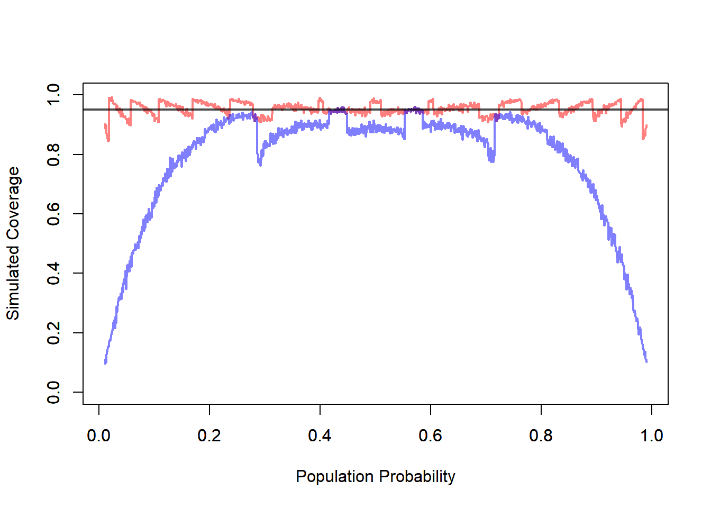
11.4.6 Hypothesis Testing for \(p\)
To test a claim about a population proportion, we begin with a null hypothesis of the form
\[ H_0:p=p_0. \]
Here, \(p_0\) is the proportion claimed under the null hypothesis.
For example, if a vocational program wants to assess whether the admission rate is 50%, then the null hypothesis is
\[ H_0:p=0.50. \]
The alternative hypothesis depends on the research question. Common choices are:
\[ H_a:p\ne p_0, \]
\[ H_a:p>p_0, \]
or
\[ H_a:p<p_0. \]
These correspond, respectively, to a two-sided test, a right-tailed test, or a left-tailed test.
11.4.6.1 Test Statistic
For large samples, the standard test statistic is
\[ z= \frac{\hat p-p_0} {\sqrt{p_0(1-p_0)/n}}. \]
This statistic compares the observed sample proportion \(\hat p\) to the value \(p_0\) claimed under the null hypothesis, measured in units of the standard deviation that would be expected if the null hypothesis were true.
So the test statistic answers the question:
How far is the observed sample proportion from the null value, relative to the variability expected under \(H_0\)?
If the value of \(z\) is close to 0, then the observed sample proportion is close to what we would expect under the null hypothesis. If the value of \(z\) is very large in magnitude, then the observed proportion is far from what we would expect under \(H_0\).
11.4.6.2 Why the Standard Error Uses \(p_0\)
This is an important point.
In confidence intervals, the standard error involves the unknown parameter \(p\), so we usually replace it by \(\hat p\), leading to the estimated standard error
\[ \sqrt{\frac{\hat p(1-\hat p)}{n}}. \]
In hypothesis testing, the situation is different.
Under the null hypothesis, the value of the parameter is fully specified:
\[ p=p_0. \]
So there is no ambiguity about which standard error to use. We compute the standard error under the null hypothesis itself:
\[ \sqrt{\frac{p_0(1-p_0)}{n}}. \]
This means that, unlike confidence intervals, there are not two competing cases here such as a Wald-type versus a score-type standard error choice for the basic one-proportion test. Once the null hypothesis is stated, the null value \(p_0\) determines the standard error used in the test statistic.
That is one reason hypothesis testing for one proportion is more direct than confidence interval construction.
11.4.6.3 Simulation: Approximate Hypothesis Testing
#Hypothesis Testing for a Proportion (Approximate Test)
# Distribution Settings
n <- 10
p <- seq(0.01, 0.99, by = 0.001)
nP <- length(p)
# Confidence Level Settings
a <- 0.05
# Simulation Settings
B <- 1000
rejPer <- rep(NA, nP)
for(i in 1:nP){
rej <- replicate(B, {
# Sample
x <- rbinom(n = n, size = 1, prob = p[i])
# Estimator
pHat <- mean(x)
# Standard Error of the Estimator
se <- sqrt(p[i] * (1 - p[i]) / n)
# Quantile for Rejection Region
za <- qnorm(p = 1 - a)
# Test Statistic
z <- (pHat - p[i])/ se
# Rejection Decision
z > za
})
# Rejection Percentage
rejPer[i] <- mean(rej)
}
plot(x = p,
y = rejPer,
xlab = "True Probability",
ylab = "Simulated Type I Error",
main = "Approximate Test")
abline(h = a, col = rgb(1, 0, 0, 0.5), lwd = 2)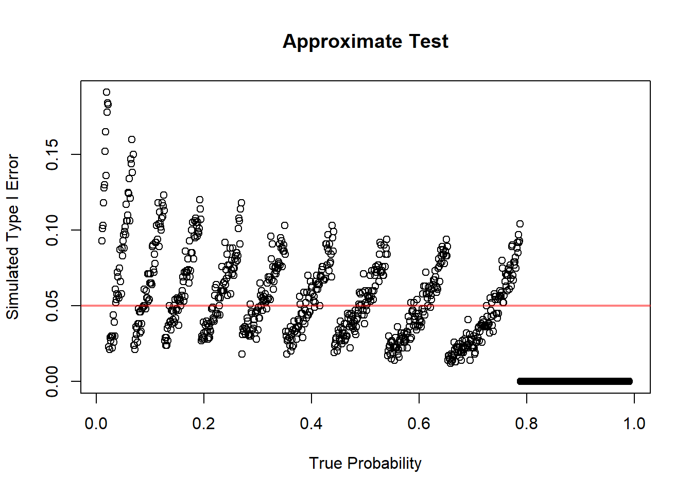
11.4.6.4 Summary
To test a claim about a population proportion, we use
\[ z= \frac{\hat p-p_0} {\sqrt{p_0(1-p_0)/n}}. \]
The standard error is computed using \(p_0\) because under the null hypothesis the parameter value is specified.
So, unlike confidence intervals, there is no separate “plug-in versus not plug-in” issue here in the basic one-proportion test. The null hypothesis itself determines the standard error used in the test statistic.
11.4.7 Conditions for the Large-Sample Approximation
The large-sample methods rely on a normal approximation to the binomial distribution.
A common condition is that the expected number of successes and failures should both be sufficiently large.
Typically check:
\[ np \text{ large} \]
and
\[ n(1-p) \text{ large}. \]
In practice, we often use expected counts at least 5 or 10.
For confidence intervals, since \(p\) is unknown, the check is often based on \(\hat p\):
\[ n\hat p \ge 5 \]
and
\[ n(1-\hat p) \ge 5. \]
For hypothesis tests, the check is usually based on the null value \(p_0\):
\[ np_0 \ge 5 \]
and
\[ n(1-p_0) \ge 5. \]
These conditions matter because the sampling distribution of \(\hat p\) may be skewed when the sample size is small or when \(p\) is close to 0 or 1.
11.4.8 Small Sample Proportions
For small samples, normal approximations may fail.
Exact binomial methods may be preferable.
This is especially true when:
- \(n\) is small
- the number of successes is very small
- the number of failures is very small
- the true proportion may be close to 0 or 1
In those situations, the discreteness of the binomial distribution becomes important. A continuous normal approximation may not describe the sampling distribution well.
The key practical lesson is:
Use large-sample \(z\) methods only when the expected counts are large enough. Otherwise, consider exact binomial methods.
11.4.8.1 Simulation: Exact Hypothesis Testing
#Hypothesis Testing for a Proportion (Approximate Test)
# Distribution Settings
n <- 10
p <- seq(0.01, 0.99, by = 0.001)
nP <- length(p)
# Confidence Level Settings
a <- 0.05
# Simulation Settings
B <- 1000
rejPer <- rep(NA, nP)
for(i in 1:nP){
pval <- replicate(B, {
# Sample
x <- rbinom(n = n, size = 1, prob = p[i])
# Test Statistic
y <- sum(x)
# P-value
pbinom(q = y - 1, size = n, prob = p[i], lower.tail = FALSE)
})
# Rejection Percentage
rejPer[i] <- mean(pval < 0.05)
}
plot(x = p,
y = rejPer,
xlab = "True Probability",
ylab = "Simulated Type I Error",
main = "Exact Test")
abline(h = a, col = rgb(1, 0, 0, 0.5), lwd = 2)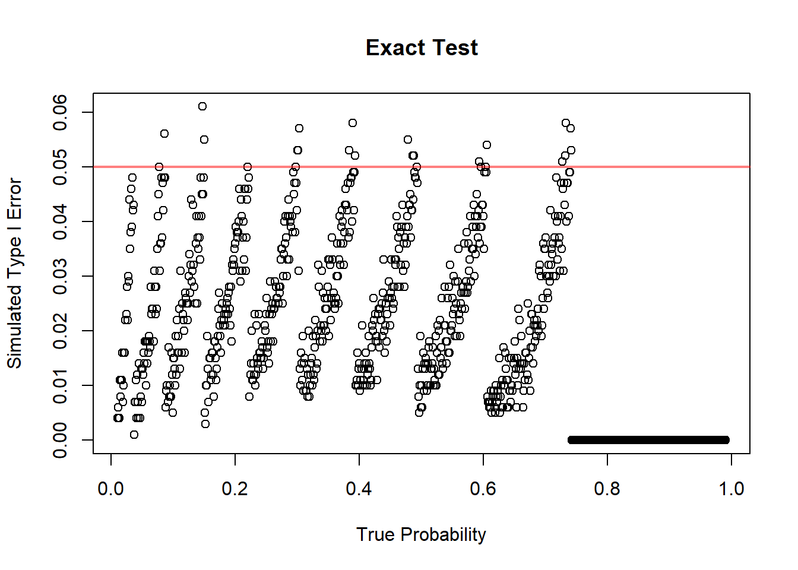
11.4.9 Choosing the Sample Size for Estimating a Proportion
11.4.9.1 Margin of Error
For a confidence interval for \(p\), the margin of error is approximately
\[ E=z_{\alpha/2} \sqrt{\frac{p(1-p)}{n}}. \]
The margin of error measures the maximum distance between the sample proportion and the endpoint of the confidence interval.
A smaller margin of error means a more precise estimate.
From the formula, the margin of error decreases when \(n\) increases. This matches intuition: larger samples provide more information and therefore produce narrower intervals.
11.4.9.2 Planning Sample Size
To plan a study, we often want to choose \(n\) so that the margin of error is no larger than a desired value \(E\).
Starting from
\[ E=z_{\alpha/2} \sqrt{\frac{p(1-p)}{n}}, \]
we solve for \(n\):
\[ n= \frac{z_{\alpha/2}^2 p(1-p)}{E^2}. \]
This formula gives the approximate sample size needed to estimate a population proportion with margin of error \(E\) at the desired confidence level.
The required sample size increases when:
- the desired margin of error is smaller
- the confidence level is higher
- \(p(1-p)\) is larger
11.4.9.3 What to Do When \(p\) Is Unknown
The difficulty in sample size planning is that the formula uses \(p\), but \(p\) is exactly what we are trying to estimate.
A common conservative choice is
\[ p=.5 \]
because it maximizes
\[ p(1-p). \]
This gives the largest required sample size. It is called conservative because it protects against underestimating the needed sample size.
If prior information about \(p\) is available, we may use that information. For example, if previous studies suggest that \(p\) is around 0.20, then we could use \(p=0.20\) in planning.
But when no reliable prior estimate is available, \(p=0.5\) is a safe default.
11.4.9.4 Practical Interpretation
Larger precision requires larger sample size.
If we want a very narrow confidence interval, we need a large sample. If we can tolerate a wider interval, a smaller sample may be sufficient.
Sample size planning is important because collecting data has costs. Larger samples may require more time, money, and effort. The goal is to collect enough data to answer the question with adequate precision, but not more than necessary.
For proportions, this planning step is especially common in surveys, polls, quality-control studies, and public health studies.
11.5 Inference About the Difference Between Two Population Proportions
11.5.1 The Parameter of Interest
When comparing two groups, the parameter of interest is
\[ p_1-p_2. \]
Here:
- \(p_1\) is the population proportion for group 1
- \(p_2\) is the population proportion for group 2
Examples:
- admission rate for women minus admission rate for men
- recovery rate for treatment minus recovery rate for placebo
- defect rate for process 1 minus defect rate for process 2
- support rate for a policy among group 1 minus support rate among group 2
The difference \(p_1-p_2\) measures how far apart the two population proportions are.
11.5.2 Point Estimation
The natural estimator is
\[ \hat p_1-\hat p_2. \]
This simply compares the sample proportions from the two groups.
Interpretation:
- if \(\hat p_1-\hat p_2>0\), group 1 has a larger sample proportion
- if \(\hat p_1-\hat p_2<0\), group 2 has a larger sample proportion
- if \(\hat p_1-\hat p_2\approx 0\), the sample proportions are similar
As with all estimators, this observed difference is subject to sampling variability.
11.5.3 Standard Error of the Difference
For confidence intervals, the estimated standard error is
\[ \sqrt{ \frac{\hat p_1(1-\hat p_1)}{n_1} + \frac{\hat p_2(1-\hat p_2)}{n_2} }. \]
This formula has two pieces because the uncertainty comes from both samples.
The first term measures the sampling variability in \(\hat p_1\). The second term measures the sampling variability in \(\hat p_2\).
Assuming the samples are independent, these variances add.
This is exactly parallel to the logic used when comparing two sample means.
11.5.4 Confidence Interval for \(p_1-p_2\)
A large-sample confidence interval has the form
\[ (\hat p_1-\hat p_2) \pm z_{\alpha/2} \sqrt{ \frac{\hat p_1(1-\hat p_1)}{n_1} + \frac{\hat p_2(1-\hat p_2)}{n_2} }. \]
The interpretation focuses on the difference in population proportions.
If the interval contains 0, then equal proportions remain plausible.
If the interval does not contain 0, then the data provide evidence of a difference between the two population proportions.
The sign of the interval tells us the direction of the difference.
11.5.4.1 Simulation: Confidence Interval Difference of Two Proportions
# Confidence Intervals for the Difference Between Two Intervals
# Distribution Settings
n1 <- 100
n2 <- 50
p1 <- 0.5
p2 <- 0.1
# Confidence Level Settings
a <- 0.05
# Simulation Settings
B <- 1000
conInt <- replicate(B, {
# Sample
x1 <- rbinom(n = n1, size = 1, prob = p1)
x2 <- rbinom(n = n2, size = 1, prob = p2)
# Estimator
p1Hat <- mean(x1)
p2Hat <- mean(x2)
# Estimated Standard Error
ese <- sqrt(p1Hat * (1 - p1Hat) / n1 + p2Hat * (1 - p2Hat) / n2)
# Quantile
za <- qnorm(p = 1 - a / 2)
# Confidence Interval Bounds
low <- (p1Hat - p2Hat) - za * ese
upp <- (p1Hat - p2Hat) + za * ese
# Save
c(low, upp)
})
conInt <- t(conInt)
cov <- mean((conInt[, 1] < (p1 - p2)) & (conInt[, 2] > (p1 - p2)))
print(paste0("Coverage of the Confidence Intervals: ", round(cov *100, 2), "%"))## [1] "Coverage of the Confidence Intervals: 93.6%"11.5.5 Hypothesis Testing for \(p_1-p_2\)
A common null hypothesis is
\[ H_0:p_1-p_2=0. \]
This is equivalent to
\[ H_0:p_1=p_2. \]
The null hypothesis says that the two groups have the same population proportion.
The alternative hypothesis depends on the research question:
\[ H_a:p_1-p_2>0, \]
or
\[ H_a:p_1-p_2<0, \]
or
\[ H_a:p_1-p_2\ne 0. \]
The hypothesis should be chosen based on the scientific question before looking at the data.
11.5.6 Pooled Proportion Under the Null Hypothesis
Under the null hypothesis, the two population proportions are assumed equal.
Therefore, the two samples are treated as estimating a common proportion.
The pooled proportion is
\[ \hat p= \frac{x_1+x_2}{n_1+n_2}. \]
This pooled estimate is used in the test standard error because, under \(H_0\), both groups share the same true proportion.
The test statistic is
\[ z= \frac{\hat p_1-\hat p_2} {\sqrt{ \hat p(1-\hat p) \left( \frac{1}{n_1}+\frac{1}{n_2} \right) }}. \]
This statistic measures how far the observed difference in sample proportions is from 0, in standard error units, assuming the null hypothesis is true.
11.5.7 Simulation: Hypothesis Testing for Difference between Two Proportions
# Confidence Intervals for a Proportion
# Distribution Settings
# Distribution Settings
n1 <- 10
n2 <- 10
p1 <- seq(0.01, 0.99, by = 0.001)
nP <- length(p1)
# Confidence Level Settings
a <- 0.05
# Simulation Settings
B <- 1000
rejPer <- rep(NA, nP)
for(i in 1:nP){
rej <- replicate(B, {
# Sample
x1 <- rbinom(n = n1, size = 1, prob = p1[i])
x2 <- rbinom(n = n2, size = 1, prob = p1[i])
# Quantity of Interest
p1Hat <- mean(x1)
p2Hat <- mean(x2)
# Estimated Standard Error
se <- sqrt(p1[i] * (1 - p1[i]) * (1 / n1 + 1 / n2))
# Quantile
za <- qnorm(p = 1 - a)
# Test Statistic
z <- (p1Hat - p2Hat) / se
# Save
z > za
})
# Rejection Percentage
rejPer[i] <- mean(rej)
}
plot(x = p1,
y = rejPer,
xlab = "True Probability",
ylab = "Simulated Type I Error")
abline(h = a, col = rgb(1, 0, 0, 0.5), lwd = 3)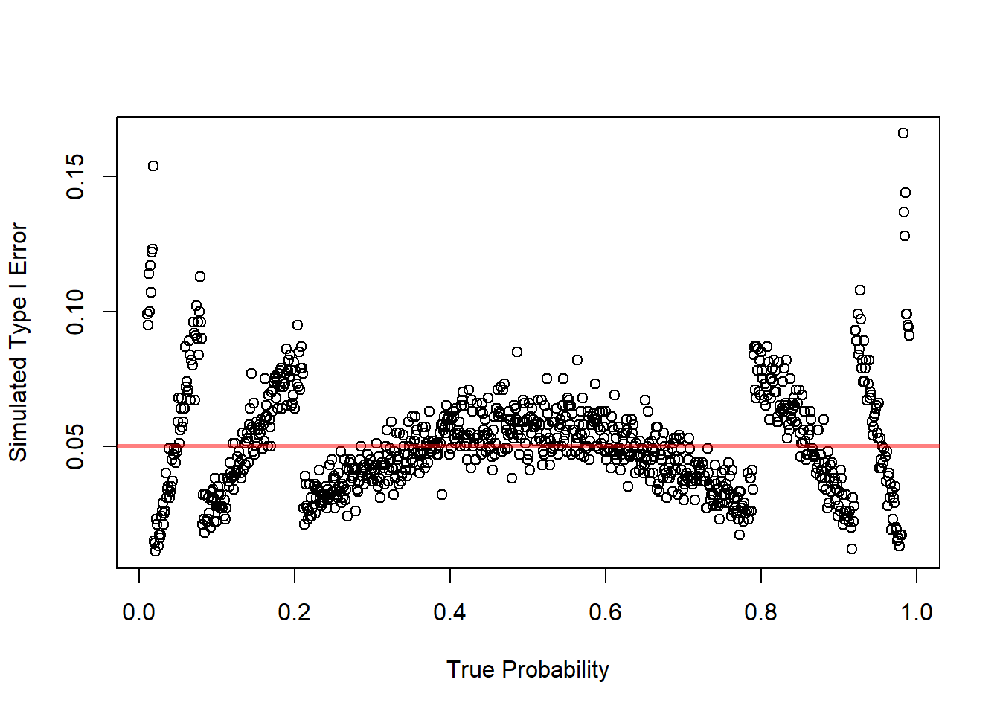
11.5.8 Conditions for the Large-Sample Test
Check expected counts in both groups.
For confidence intervals, use the sample proportions to check that each group has enough successes and failures.
For hypothesis tests, use the pooled proportion under the null hypothesis.
A common requirement is that all expected counts be at least 5 or 10.
The reason is the same as in one-proportion inference: the normal approximation works better when the binomial distributions are not too skewed.
11.6 Inference About Several Proportions
11.6.1 Why Several Proportions Require a New Method
When there are more than two categories, comparing proportions one at a time becomes inefficient and can increase the chance of misleading conclusions.
For example, suppose applicants choose among three preferred programs:
- welding
- health technology
- electronics
If we want to test whether the population proportions are equal across these categories, we need a method that handles all categories at once.
This requires a multivariate count framework.
The chi-square goodness-of-fit test is designed for exactly this situation.
11.6.2 Hypotheses for a Goodness-of-Fit Test
A goodness-of-fit test is used when we want to compare an observed distribution of counts with a theoretical or hypothesized distribution. In other words, we want to determine whether the data are consistent with a proposed model for how observations should be distributed across categories.
The null hypothesis describes the distribution that we expect to see if the proposed model is correct. The alternative hypothesis says that the true distribution is different from the proposed one.
Suppose a categorical variable has \(k\) possible categories. Let
\[ p_1, p_2, \ldots, p_k \]
represent the true population proportions in the \(k\) categories. A goodness-of-fit test is usually written as
\[ H_0: p_1 = p_{10}, \ p_2 = p_{20}, \ldots, p_k = p_{k0} \]
where
\[ p_{10}, p_{20}, \ldots, p_{k0} \]
are the proportions specified by the hypothesized model.
The alternative hypothesis is
\[ H_a: \text{at least one of the population proportions is different from the value specified by } H_0. \]
This means that we do not usually specify exactly which category is different. The test is designed to detect whether the overall pattern of observed counts is inconsistent with the hypothesized pattern.
Definition 11.4 (Hypotheses for a Goodness-of-Fit Test) For a categorical variable with \(k\) categories, a goodness-of-fit test compares the true population proportions \(p_1, p_2, \ldots, p_k\) with hypothesized values \(p_{10}, p_{20}, \ldots, p_{k0}\).
The null hypothesis is
\[ H_0: p_1 = p_{10}, \ p_2 = p_{20}, \ldots, p_k = p_{k0}. \]
The alternative hypothesis is
\[ H_a: \text{at least one } p_i \text{ is different from its hypothesized value } p_{i0}. \]
The hypothesized probabilities must add to one:
\[ p_{10}+p_{20}+\cdots+p_{k0}=1. \]
This is required because the categories describe all possible outcomes. For example, if a categorical variable has four possible categories, the probabilities assigned to the four categories must account for the entire population.
Once the hypothesized probabilities are specified, the expected count in category \(i\) is
\[ E_i = n p_{i0}, \]
where \(n\) is the total sample size.
The observed counts are denoted by
\[ O_1, O_2, \ldots, O_k. \]
The purpose of the test is to compare the observed counts \(O_i\) with the expected counts \(E_i\). If the null hypothesis is correct, the observed counts should be reasonably close to the expected counts. They will not usually be exactly equal because of sampling variability, but they should not be too far apart.
The chi-square goodness-of-fit statistic is
\[ X^2 = \sum_{i=1}^k \frac{(O_i - E_i)^2}{E_i}. \]
Large values of \(X^2\) provide evidence against the null hypothesis because they indicate that the observed distribution is far from the hypothesized distribution.
11.6.2.1 Example: Equal Proportions Across Categories
Suppose a researcher wants to determine whether students choose four study methods equally often. The four categories are:
- reading the textbook,
- watching videos,
- working practice problems,
- studying with classmates.
If the researcher believes all four methods are equally likely, then the null hypothesis is
\[ H_0: p_1 = 0.25, \ p_2 = 0.25, \ p_3 = 0.25, \ p_4 = 0.25. \]
The alternative hypothesis is
\[ H_a: \text{at least one of the four proportions is different from } 0.25. \]
Notice that the alternative hypothesis does not say which study method is more or less common. It only says that the distribution is not exactly the equal-proportions distribution.
If the sample size is \(n=200\), then the expected count in each category is
\[ E_i = 200(0.25)=50. \]
So under the null hypothesis, we would expect about 50 students in each category.
11.6.2.2 Example: Unequal Hypothesized Proportions
A goodness-of-fit test does not require the hypothesized proportions to be equal. Suppose a university claims that the distribution of students across four colleges is:
\[ p_1 = 0.40, \quad p_2 = 0.30, \quad p_3 = 0.20, \quad p_4 = 0.10. \]
The hypotheses are
\[ H_0: p_1=0.40, \ p_2=0.30, \ p_3=0.20, \ p_4=0.10 \]
and
\[ H_a: \text{at least one of these proportions is incorrect.} \]
If a sample of \(n=500\) students is selected, the expected counts are
\[ E_1 = 500(0.40)=200, \]
\[ E_2 = 500(0.30)=150, \]
\[ E_3 = 500(0.20)=100, \]
and
\[ E_4 = 500(0.10)=50. \]
The goodness-of-fit test then compares the observed counts from the sample with these expected counts.
11.6.2.3 Interpretation of the Alternative Hypothesis
The alternative hypothesis in a goodness-of-fit test is broad. It does not usually identify the exact way in which the null model fails.
For example, if there are five categories, the alternative hypothesis is not
\[ p_1 > p_{10} \]
or
\[ p_3 < p_{30}. \]
Instead, it is simply
\[ H_a: \text{the true distribution is not the hypothesized distribution.} \]
This means that a significant goodness-of-fit test tells us that the observed data are not consistent with the hypothesized model. However, the test does not automatically tell us which categories are responsible for the difference.
To understand where the difference comes from, we should compare the observed and expected counts category by category. Categories with large values of
\[ \frac{(O_i - E_i)^2}{E_i} \]
contribute more to the test statistic and may help identify where the disagreement is strongest.
11.6.2.4 Decision Rule
The goodness-of-fit test is a right-tailed test because only large values of \(X^2\) provide evidence against the null hypothesis.
The reason is that \(X^2\) measures distance between the observed and expected counts. A value close to zero means that the observed counts are close to the expected counts. A large value means that the observed counts are far from what the null hypothesis predicts.
Therefore, the decision rule is:
- Reject \(H_0\) if the p-value is less than or equal to the significance level \(\alpha\).
- Fail to reject \(H_0\) if the p-value is greater than \(\alpha\).
Equivalently, using a critical value, we reject \(H_0\) when
\[ X^2 > \chi^2_{\alpha, df}, \]
where \(df\) is the number of degrees of freedom.
When the hypothesized probabilities are fully specified in advance, the degrees of freedom are
\[ df = k - 1. \]
The subtraction of 1 occurs because the observed counts must add to the sample size \(n\). Once \(k-1\) counts are known, the last count is determined.
If parameters are estimated from the data before computing expected counts, then additional degrees of freedom are lost. If \(m\) parameters are estimated, then
\[ df = k - 1 - m. \]
11.6.2.5 Practical Meaning of the Hypotheses
In practice, the null hypothesis represents a proposed explanation for how the population is distributed across categories. The goodness-of-fit test asks whether the sample data are compatible with that explanation.
Failing to reject \(H_0\) does not prove that the hypothesized distribution is exactly true. It only means that the sample does not provide strong evidence against it.
Rejecting \(H_0\) means that the observed distribution is too far from the expected distribution to be explained by ordinary sampling variability alone, assuming the null hypothesis is true.
Thus, the goodness-of-fit test is not just checking whether observed and expected counts are different. They will almost always be different. The test checks whether the differences are large relative to what would be expected by chance.
11.6.2.6 Conditions for the Chi-Square Approximation
Expected counts should not be too small.
A common guideline is that expected counts should generally be at least 5.
This condition matters because the chi-square distribution is an approximation to the sampling distribution of the test statistic. When expected counts are too small, the approximation may be poor.
If expected counts are very small, categories may need to be combined, or exact methods may be considered.
11.6.2.7 Simulation: Goodness of Fit Test
# Confidence Intervals for a Proportion
# Simulation Settings
N <- c(1:10, 20, 30, 50, 100)
B <- 1000
S <- 100
# Distribution Settings
p <- c(1/3, 1/3, 1/3)
# Confidence Level Settings
a <- 0.05
rejPer <- matrix(data = NA, nrow = S, length(N))
for(i in 1:length(N)){
n <- N[i]
rej <- replicate(S, {
replicate(B, {
# Sample
x <- rmultinom(n = n, size = 1, prob = p)
# Observed Counts
O <- rowSums(x)
# Expected Counts
E <- n * p
# Test Statistic
x2 <- sum((O - E)^2 / E)
# Quantile
x2a <- qchisq(p = 1- a, df = k - 1)
# Save Test Desicion
x2 > x2a
})
})
# Rejection Percentage
rejPer[, i] <- colMeans(rej)
}
boxplot(rejPer,
xlab = "Number of Observations",
ylab = "Simulated Type I Error",
main = "Simulated Hypothesis Test for Goodness of Fit",
xaxt = 'n')
axis(side = 1, at = 1:length(N), labels = N)
abline(h = a, col = rgb(1, 0, 0, 0.5), lwd = 4)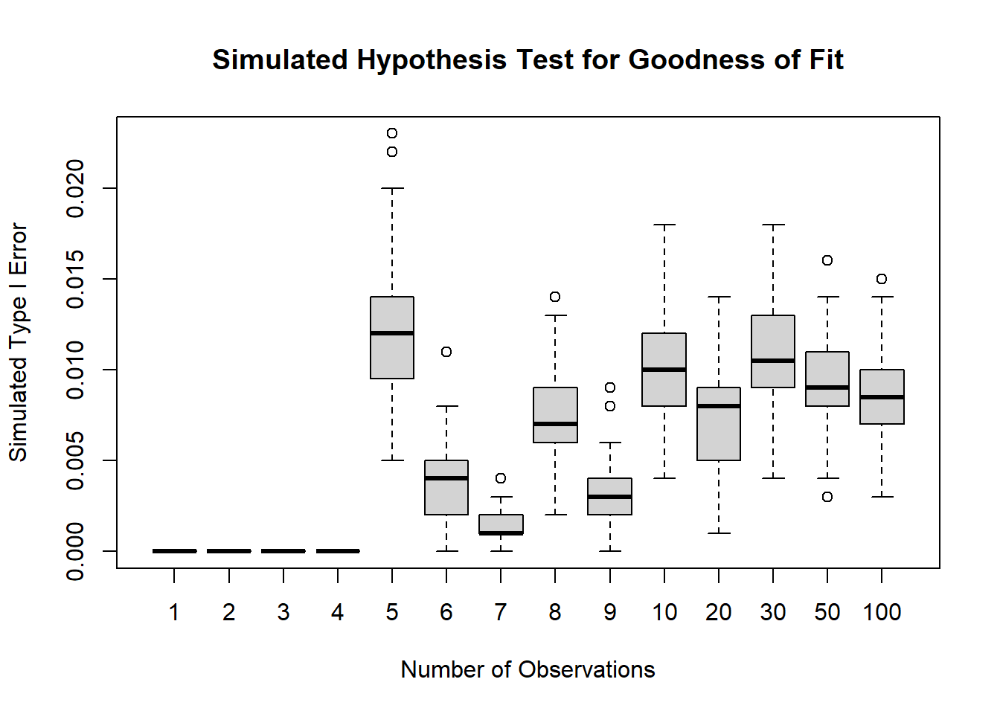
11.7 Contingency Tables
11.7.1 Two-Way Tables
A contingency table is a table of counts that summarizes the joint distribution of two categorical variables.
Each cell of the table contains the number of observations that fall into a particular combination of categories, one category from the first variable and one category from the second.
For example, in the vocational admission study, the two categorical variables might be:
- gender
- admission decision
A two-way table could then be organized as follows:
| Admitted | Not Admitted | |
|---|---|---|
| Women | ||
| Men |
This table records how many applicants fall into each combination of the two variables.
The usefulness of a contingency table is that it allows us to study the relationship between the two variables at the same time. Instead of looking only at the overall number admitted or only at the number of women applicants, we can examine whether the admission pattern changes across gender groups.
This leads naturally to questions such as:
Is the admission distribution the same for women and men?
or
Does gender appear to be associated with admission decision?
These are not exactly the same question in wording, but they are closely related statistically. Both ask whether the distribution of one categorical variable changes across the levels of another variable.
If the admission pattern is essentially the same for women and men, then the two variables do not appear to be related. If the admission pattern differs across gender groups, then there is evidence of an association.
11.7.2 Row Percentages and Column Percentages
Once a contingency table has been constructed, the raw counts are often only the starting point.
Counts show how many observations fall into each cell, but counts alone can sometimes be misleading, especially when the row totals or column totals are very different. For that reason, contingency tables are often supplemented by row percentages or column percentages.
The correct choice depends on the question being asked.
Row percentages condition on the row category.
That means that within each row, we convert the counts into proportions or percentages that add up to 100%.
Column percentages condition on the column category.
That means that within each column, we convert the counts into proportions or percentages that add up to 100%.
For example, suppose the rows are gender and the columns are admission status.
Then row percentages answer questions such as:
Among women, what proportion were admitted?
Among men, what proportion were admitted?
These are often the most relevant percentages when the goal is to compare admission rates across gender groups.
By contrast, column percentages answer questions such as:
Among admitted applicants, what proportion were women?
Among not admitted applicants, what proportion were women?
These percentages answer a different question. They describe the composition of the admitted and not admitted groups, rather than the admission rates within gender groups.
Both summaries are valid, but they are not interchangeable.
A common mistake is to compute one type of percentage and interpret it as though it were the other. This can lead to incorrect conclusions.
So the key principle is:
The conditioning direction determines the interpretation.
Before reporting percentages from a contingency table, it is important to decide whether the scientific question is about row comparisons or column comparisons.
11.7.3 Marginal and Conditional Distributions
A contingency table allows us to describe two kinds of distributions: marginal distributions and conditional distributions.
A marginal distribution describes the distribution of one categorical variable by itself, ignoring the second variable.
For example, the marginal distribution of admission status gives the overall proportions:
- admitted
- not admitted
without separating applicants by gender.
Similarly, the marginal distribution of gender gives the overall proportions:
- women
- men
without separating them by admission status.
Marginal distributions are useful for describing the overall composition of the sample, but they do not tell us whether the two variables are related.
A conditional distribution, by contrast, describes the distribution of one variable within a specific category of the other variable.
For example, the conditional distribution of admission status given gender tells us:
- among women, what proportion were admitted and not admitted
- among men, what proportion were admitted and not admitted
This is often the most important summary when we are studying whether admission status differs across gender groups.
This distinction is essential because many questions about association are really questions about whether the conditional distributions differ across groups.
If the conditional distribution of admission status is the same for women and men, then gender and admission status do not appear to be associated.
If the conditional distributions differ, then the two variables are associated.
So, conceptually:
- marginal distributions describe variables separately
- conditional distributions describe how one variable behaves within levels of another
In contingency-table analysis, association is usually studied by comparing conditional distributions.
11.7.4 Graphical Displays for Categorical Data
Graphs are often very helpful in the analysis of categorical data because they allow patterns in the table to be seen quickly before any formal statistical test is performed.
Common graphical displays include:
- bar charts
- segmented bar charts
- mosaic plots
A bar chart is useful for displaying counts or proportions for a single categorical variable. For example, we might use a bar chart to display the overall numbers admitted and not admitted.
A segmented bar chart is especially useful for displaying conditional distributions. For example, we might create one bar for women and one bar for men, and then divide each bar into admitted and not admitted segments. This makes it easy to compare admission proportions across gender groups.
A mosaic plot provides a graphical representation of the full contingency table. The widths and heights of the rectangles reflect the structure of the counts or proportions in the table, making it possible to see both marginal sizes and conditional differences at the same time.
These graphs are useful because they often reveal patterns before formal methods are applied.
For example, a segmented bar chart may quickly show that the admission proportions for women and men are very similar, suggesting little or no association. On the other hand, it may show a clear difference between the groups, suggesting that a formal test of independence or homogeneity may be appropriate.
So, in practice, graphical displays are not just decorative. They are part of the statistical analysis because they help us:
- understand the structure of the table
- compare conditional distributions
- detect possible associations
- communicate results clearly
11.7.4.1 Example: Numerical and Graphical Displays for the Admissions and Gender Example
Below is a fully base R version that simulates an admissions dataset and builds three common displays for contingency tables:
- bar chart
- segmented bar chart
- mosaic plot
The code is ready to paste into your notes.
11.7.4.2 Simulated Data
We first create a small dataset with two categorical variables:
GenderAdmission
set.seed(5428)
n <- 400
Gender <- sample(c("Women", "Men"),
size = n,
replace = TRUE,
prob = c(0.70, 0.30))
Admission <- ifelse(Gender == "Women",
sample(c("Admitted", "Not Admitted"),
size = n,
replace = TRUE,
prob = c(0.62, 0.38)),
sample(c("Admitted", "Not Admitted"),
size = n,
replace = TRUE,
prob = c(0.50, 0.50)))
dat <- data.frame(Gender = Gender,
Admission = Admission)
# Contingency Table Counts
tab <- table(dat$Gender, dat$Admission)
tab##
## Admitted Not Admitted
## Men 63 66
## Women 162 109##
## Admitted Not Admitted
## Men 48.84 51.16
## Women 59.78 40.22##
## Admitted Not Admitted
## Men 28.00 37.71
## Women 72.00 62.29# Marginal Distributions
tabMar <- cbind(tab, rowSums(tab))
tabMar <- rbind(tabMar, colSums(tabMar))
tabMar## Admitted Not Admitted
## Men 63 66 129
## Women 162 109 271
## 225 175 400This code simulates application outcomes for a group of applicants.
The final object tab is the contingency table that summarizes the joint counts for gender and admission decision.
The counts in the table are the starting point for all of the graphical displays below.
11.7.4.3 Bar Chart of Counts
barplot(tab,
beside = TRUE,
col = c("gray70", "gray40"),
legend.text = rownames(tab),
args.legend = list(x = "topright"),
main = "Admission Counts by Gender",
xlab = "Admission Decision",
ylab = "Count")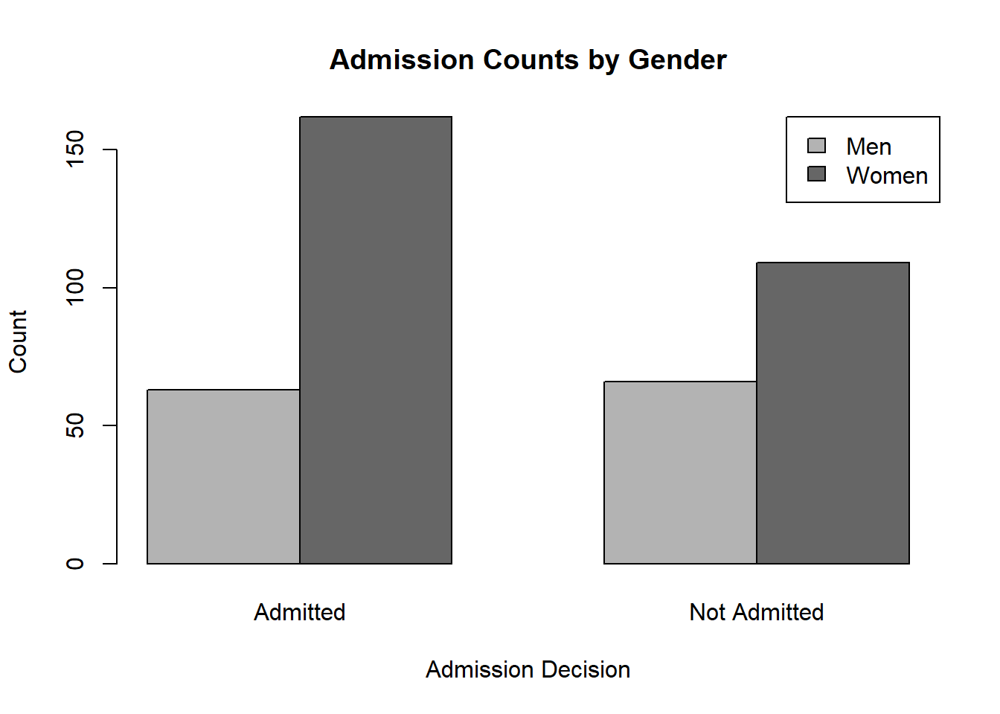
This plot displays the raw counts in each category.
Because the bars are side by side, it is easy to compare the number of women and men within each admission category.
This graph is useful when the question is about the number of applicants in each group. However, counts alone can sometimes be misleading if the total number of women and men differs.
11.7.4.4 Segmented Bar Chart
barplot(prop.table(tab, margin = 1),
beside = FALSE,
col = c("gray70", "gray40"),
legend.text = colnames(prop.table(tab, margin = 1)),
args.legend = list(x = "topright"),
main = "Conditional Distribution of Admission by Gender",
xlab = "Gender",
ylab = "Proportion")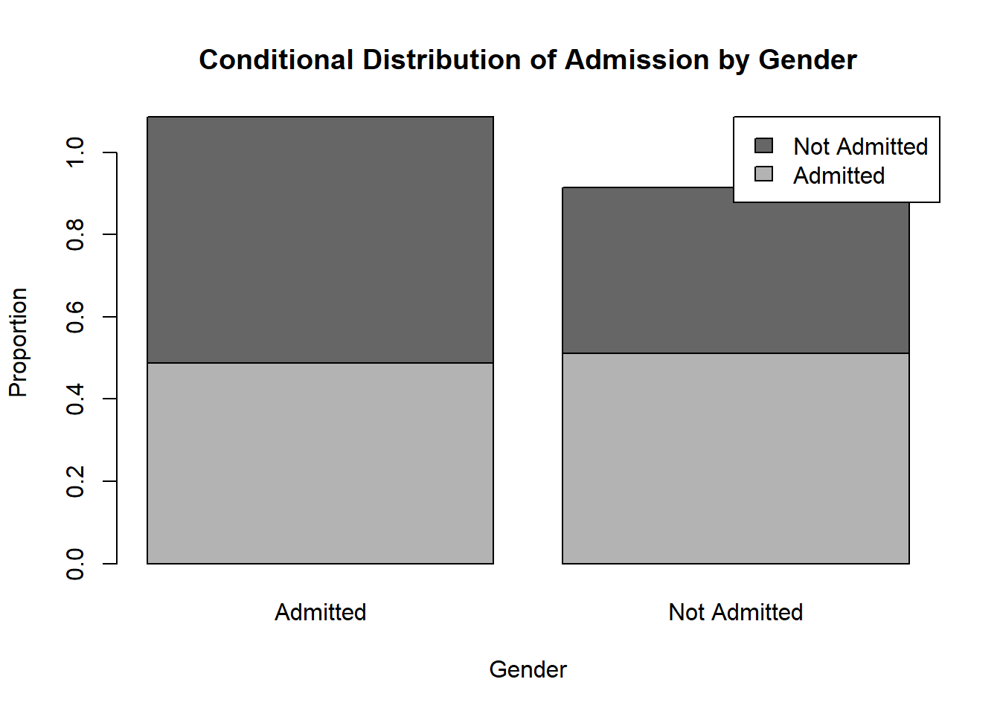
This graph uses row proportions, so each bar adds up to 1.
That means the graph compares the conditional distribution of admission status within each gender.
This is often the most informative display when the question is:
Do admission outcomes differ between women and men?
If the segments look similar across the two bars, the admission distributions are similar. If the segments differ noticeably, that suggests an association between gender and admission status.
11.7.4.5 Mosaic Plot
mosaicplot(tab,
col = c("gray85", "gray50"),
main = "Mosaic Plot for Gender and Admission",
xlab = "Gender",
ylab = "Admission")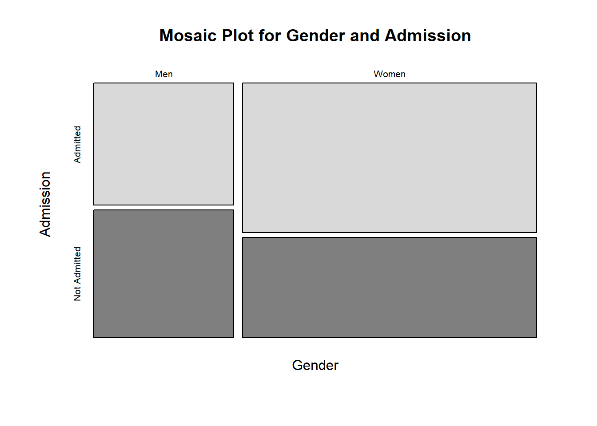
A mosaic plot displays the full structure of the contingency table.
The width of each column reflects the relative size of each gender group, while the heights of the subdivisions reflect the proportions admitted and not admitted within each group.
This plot is useful because it simultaneously shows:
- the marginal distribution of gender
- the conditional distribution of admission given gender
So it provides a compact visual summary of both sample composition and possible association.
11.7.4.6 Interpretation
These three displays emphasize different aspects of the same contingency table:
- The bar chart emphasizes counts.
- The segmented bar chart emphasizes conditional proportions.
- The mosaic plot emphasizes both marginal size and conditional structure.
For studying whether admission decision is associated with gender, the segmented bar chart and mosaic plot are usually more informative than the raw count bar chart, because they focus attention on the relative admission rates rather than only the total number of applicants in each group.
11.8 Chi-Square Test of Independence
11.8.1 Purpose of the Test
The chi-square test of independence is used to assess whether two categorical variables are related in a population.
Its purpose is not to compare means or variances, but to determine whether the distribution of one categorical variable changes across the levels of another categorical variable.
For example, we may ask:
- Is gender associated with admission decision?
- Is treatment group associated with recovery status?
- Is smoking status associated with disease status?
- Is program preference associated with education level?
In each of these examples, the data can be organized into a contingency table, where each cell contains the number of observations falling into a particular combination of categories.
The test then asks whether the observed pattern of counts is consistent with independence, or whether the counts differ enough from that pattern to suggest an association.
So the main idea is:
If two categorical variables are independent, then knowing the category of one variable should not help predict the category of the other.
For example, in the admissions setting, if gender and admission status are independent, then the proportion admitted should be the same for women and men. If those proportions differ noticeably, then the two variables may be associated.
11.8.2 Hypotheses
The hypotheses for the chi-square test of independence are
\[ H_0: \text{the two categorical variables are independent}, \]
and
\[ H_a: \text{the two categorical variables are associated}. \]
The null hypothesis says that there is no relationship between the two variables in the population.
The alternative hypothesis says that there is a relationship.
It is helpful to think about this in terms of conditional distributions.
If two variables are independent, then the distribution of one variable is the same across all levels of the other variable.
In the admissions example, independence means that the distribution of admission outcomes is the same for women and men. In other words, the probability of being admitted does not change with gender.
If the conditional distributions differ, then the variables are associated.
Thus, the chi-square test of independence is really testing whether the differences seen in the sample table are small enough to be explained by random sampling variation, or large enough to suggest a real association in the population.
11.8.3 Expected Counts Under Independence
The chi-square test does not compare the observed counts to equal counts unless the problem specifically implies equal proportions.
Instead, it compares the observed counts to the counts we would expect under independence.
If the variables are independent, then the expected count in row \(i\) and column \(j\) is
\[ E_{ij}= \frac{(\text{row total})(\text{column total})}{\text{grand total}}. \]
This formula is important because it shows how independence determines the shape of the table.
The row total tells us how many observations belong to row \(i\).
The column total tells us how many observations belong to column \(j\).
If the variables are independent, then these margins alone determine what the interior cell counts should approximately look like.
So the expected counts are not arbitrary. They are the counts that would naturally arise if the row variable and the column variable had no relationship.
For example, if 60% of all applicants are admitted and a particular row contains 100 applicants, then under independence we would expect about 60 of those 100 to be admitted.
This is the key logic of the test:
- the observed counts describe what actually happened in the sample
- the expected counts describe what would be expected if the variables were independent
The test measures how far apart those two tables are.
11.8.4 Test Statistic
The chi-square test statistic is
\[ \chi^2= \sum \frac{(O-E)^2}{E}, \]
where:
- \(O\) represents an observed count
- \(E\) represents the corresponding expected count under independence
The sum is taken over all cells of the contingency table.
Each term in the sum measures how far an observed count is from its expected count, relative to the size of the expected count.
This structure is very intuitive:
- if an observed count is close to its expected count, that cell contributes little to the test statistic
- if an observed count is far from its expected count, that cell contributes more
- when many cells show sizable discrepancies, the overall test statistic becomes large
So the chi-square statistic is a measure of the overall discrepancy between the observed table and the table predicted by independence.
Large values of the statistic suggest that the sample data do not look like what independence would produce.
Small values suggest that the observed table is reasonably close to the independence model.
For an \(r \times c\) table, the degrees of freedom are
\[ (r-1)(c-1). \]
This formula reflects the number of cell counts that are free to vary once the row and column totals are fixed.
The chi-square distribution with these degrees of freedom provides the reference distribution for the test statistic under the null hypothesis.
11.8.5 Conditions
The chi-square test of independence is based on an approximation, so certain conditions are needed for that approximation to work well.
A key condition is that the expected counts should not be too small.
A common rule of thumb is that expected counts should generally be at least 5.
This condition matters because the chi-square distribution is only an approximate sampling distribution for the test statistic. When expected counts are too small, the approximation may be poor, and the resulting p-value may not be reliable.
Another important condition is that the observations should be independent.
This means that each observational unit should contribute to one and only one cell of the contingency table.
For example:
- each applicant should appear once in an admissions table
- each patient should appear once in a treatment-outcome table
- each student should contribute one program preference
If the same person appears multiple times, or if the observations are naturally paired or repeated, then the usual chi-square test of independence is not appropriate.
So, before applying the test, it is important to ask:
- Are the expected counts large enough?
- Are the observations independent?
- Does each unit belong to exactly one cell?
These checks are essential because the quality of the inference depends on them.
11.8.6 Interpretation
A significant chi-square test means that the data provide evidence that the two categorical variables are associated.
Equivalently, it means that the observed table differs more from the independence model than would be expected from ordinary sampling variation alone.
However, the conclusion should be stated carefully.
A significant result does not tell us:
- how strong the association is
- which categories are mainly responsible for the association
- whether the association is practically important
- whether the relationship is causal
This is one of the most important points in interpreting categorical analyses.
Statistical significance does not necessarily imply a strong or important relationship.
With a very large sample, even a small difference in proportions can produce a very small p-value.
For that reason, the chi-square test should usually be followed by a closer examination of the table itself.
In particular, it is often important to examine:
- row or column percentages
- the actual size of the differences
- which cells differ most from expectation
- effect-size measures such as difference in proportions, relative risk, odds ratio, or Cramer’s V
- the practical context of the study
For example, in the admissions setting, a significant result should lead us to ask:
- How different are the admission rates for women and men?
- Are the differences practically meaningful?
- Could some third variable explain the association?
- Does the study design support causal interpretation?
So the chi-square test is an important first step, but it is not the end of the analysis.
It tells us whether there is evidence of association, but the meaning of that association must be understood through careful examination of the proportions, the effect size, and the context.
11.8.7 Simulation: Test for Independence
# Confidence Intervals for a Proportion
# Simulation Settings
N <- 4^(0:5)
B <- 100
S <- 100
# Distribution Settings
n <- 1000
p1 <- c(1/4, 1/4, 1/2)
p2 <- c(1/2, 1/2)
c <- length(p1)
r <- length(p2)
# Confidence Level Settings
a <- 0.05
rejPer <- matrix(data = NA, nrow = S, length(N))
for(i in 1:length(N)){
n <- N[i]
rej <- replicate(S, {
replicate(B, {
# Sample
x <- rmultinom(n = n, size = 1, prob = p1)
y <- rmultinom(n = n, size = 1, prob = p2)
# Observed Counts
O <- y %*% t(x)
# Estimated Marginal Probabilities
estP1 <- colSums(O) / n
estP2 <- rowSums(O) / n
# Estimated Probabilities
estP <- estP2 %*% t(estP1)
# Expected Counts
E <- estP * n
# Test Statistic
x2 <- sum((O - E)^2 / E)
# Quantile
x2a <- qchisq(p = 1- a, df = (r - 1) * (c - 1))
# Save Test Desicion
x2 > x2a
})
})
# Rejection Percentage
rejPer[, i] <- colMeans(rej)
}
boxplot(rejPer,
xlab = "Number of Observations",
ylab = "Simulated Type I Error",
main = "Simulated Hypothesis Test for Independence",
xaxt = 'n')
axis(side = 1, at = 1:length(N), labels = N)
abline(h = a, col = rgb(1, 0, 0, 0.5), lwd = 4)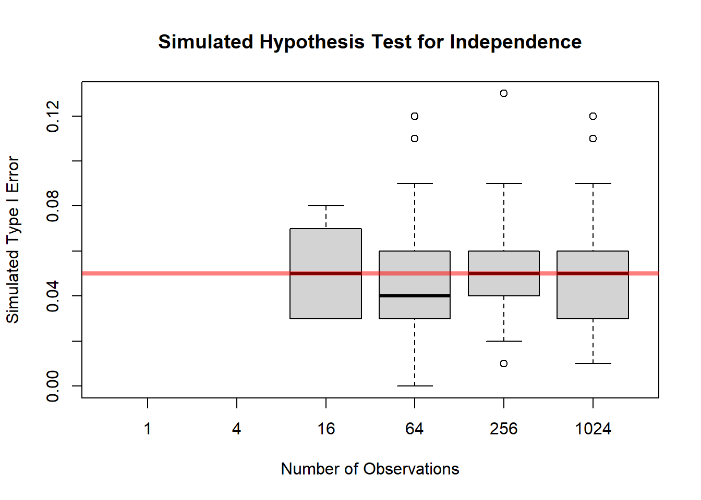
Related to this test is a goodness of fit test given by independence and knowing the proportions for each category. For example, it is easy to know the proportion of men and women from census data or directly form the data. And the admissions might be restricted to accept an exact percentage. In this case, we can build a probability model using the known probabilities in case of independence.
# Confidence Intervals for a Proportion
# Simulation Settings
N <- 4^(0:5)
B <- 100
S <- 100
# Distribution Settings
n <- 1000
p1 <- c(1/4, 1/4, 1/2)
p2 <- c(1/2, 1/2)
c <- length(p1)
r <- length(p2)
# Confidence Level Settings
a <- 0.05
rejPer <- matrix(data = NA, nrow = S, length(N))
for(i in 1:length(N)){
n <- N[i]
rej <- replicate(S, {
replicate(B, {
# Sample
x <- rmultinom(n = n, size = 1, prob = p1)
y <- rmultinom(n = n, size = 1, prob = p2)
# Observed Counts
O <- y %*% t(x)
# Probability Model
p <- p2 %*% t(p1)
# Expected Counts
E <- p * n
# Test Statistic
x2 <- sum((O - E)^2 / E)
# Quantile
x2a <- qchisq(p = 1- a, df = (r) * (c) - 1)
# Save Test Desicion
x2 > x2a
})
})
# Rejection Percentage
rejPer[, i] <- colMeans(rej)
}
boxplot(rejPer,
xlab = "Number of Observations",
ylab = "Simulated Type I Error",
main = "Simulated Hypothesis Test for Independence",
xaxt = 'n')
axis(side = 1, at = 1:length(N), labels = N)
abline(h = a, col = rgb(1, 0, 0, 0.5), lwd = 4)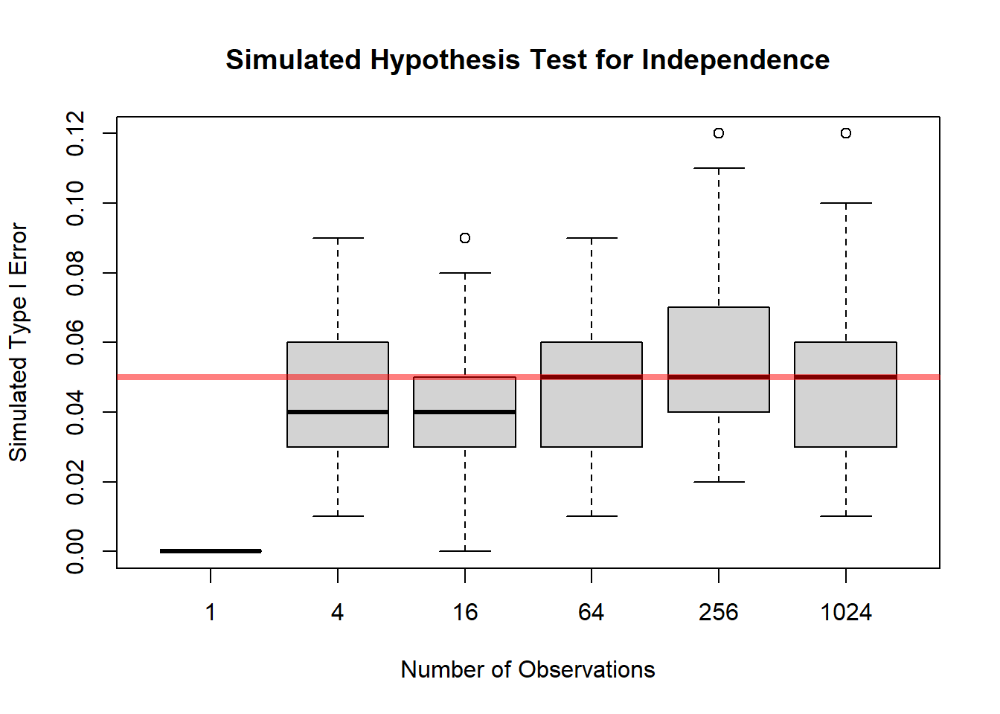
11.8.8 Summary
The chi-square test of independence is used to assess whether two categorical variables are related.
It works by comparing:
- the observed counts in the contingency table
- the expected counts that would arise if the variables were independent
The test statistic is
\[ \chi^2= \sum \frac{(O-E)^2}{E}, \]
with degrees of freedom
\[ (r-1)(c-1). \]
A large chi-square value provides evidence against independence.
But after the test is performed, the analysis should continue by examining the actual proportions and the practical importance of the association, not just the p-value.
11.9 Chi-Square Test of Homogeneity
11.9.1 Purpose of the Test
The chi-square test of homogeneity is used to compare the distribution of a categorical response across two or more populations or groups.
The main question is whether the groups have the same population distribution for the categorical outcome, or whether at least one group differs.
For example, we may ask:
- Do different programs have the same distribution of applicant outcomes?
- Do admission outcomes differ across gender groups?
- Do treatment groups have the same recovery distribution?
- Do regions have the same preference distribution?
In each of these settings, we have several groups, and within each group we observe counts in a set of categories.
So the focus is not on means or variances, but on whether the pattern of proportions is the same across the groups.
For example, if applicants come from several vocational programs, the test can be used to assess whether the proportions admitted and not admitted are the same for all programs. If the proportions are the same across all programs, then the outcome distribution is homogeneous across programs. If the proportions differ, then the distributions are not homogeneous.
This is the central idea:
The chi-square test of homogeneity asks whether several populations share the same categorical distribution.
11.9.2 Difference Between Independence and Homogeneity
The chi-square test of homogeneity and the chi-square test of independence are mathematically very similar.
They use:
- the same general chi-square statistic
- the same expected-count logic
- the same degrees-of-freedom formula
However, the two tests arise from different study designs and answer slightly different questions.
For a test of independence, we usually begin with one sample and measure two categorical variables on each observational unit.
For example:
- for each applicant, we record gender and admission decision
- for each patient, we record smoking status and disease status
Then we ask whether the two variables are associated.
For a test of homogeneity, we usually begin with separate samples from different groups or populations, and for each unit we record one categorical response variable.
For example:
- one sample of applicants from Program A
- one sample of applicants from Program B
- one sample of applicants from Program C
Then we ask whether the distribution of admission outcomes is the same across those programs.
So the distinction is mainly conceptual:
- independence asks whether two variables are related in one population
- homogeneity asks whether one variable has the same distribution across several populations
This is an important distinction in study design, even though the actual computation is essentially the same.
In practice, the same contingency table can often be analyzed using either language, depending on how the data were collected.
11.9.3 Table Structure and Expected Counts
The data for a homogeneity test are usually organized into a contingency table.
The rows often represent the different populations or groups, and the columns represent the categories of the response variable.
For example, suppose rows correspond to three treatment groups and columns correspond to recovery status:
| Recovered | Not Recovered | |
|---|---|---|
| Treatment 1 | ||
| Treatment 2 | ||
| Treatment 3 |
The observed counts tell us how many individuals in each group fall into each response category.
Under the null hypothesis of homogeneity, the response distribution is the same in all groups. That means each group should have approximately the same proportions in the response categories, allowing for ordinary sampling variation.
The expected count in row \(i\) and column \(j\) is computed by
\[ E_{ij}= \frac{(\text{row total})(\text{column total})}{\text{grand total}}. \]
This formula gives the counts we would expect if all groups shared the same response distribution.
So, just as in the independence test, the chi-square method compares:
- the observed counts, which come from the sample
- the expected counts, which come from the null hypothesis
If the two are close, the null hypothesis remains plausible. If they differ substantially, the data provide evidence against homogeneity.
11.9.4 Hypotheses
The null hypothesis states that the population distributions are the same across groups.
For example, if the response is admission outcome and the groups are different programs, we may write
\[ H_0: \text{the admission outcome distribution is the same for all programs}. \]
More generally, if there are \(r\) groups and \(c\) response categories, the null hypothesis says that each group has the same set of category probabilities.
The alternative hypothesis is that the distributions are not all the same.
That is,
\[ H_a: \text{at least one group has a different response distribution}. \]
This point is important:
The alternative does not say exactly which group differs or in which category the difference occurs.
It only says that the overall pattern of counts is inconsistent with equal population distributions.
So the chi-square test of homogeneity is an overall test. If it is significant, we then examine the table more carefully to determine where the differences are located.
11.9.5 Test Statistic
The chi-square test statistic for homogeneity has the same form as in other chi-square procedures:
\[ \chi^2= \sum \frac{(O-E)^2}{E}, \]
where:
- \(O\) is an observed count
- \(E\) is the corresponding expected count under the null hypothesis
The sum is taken over all cells in the table.
Each cell contributes an amount that reflects how far the observed count is from what would be expected if the distributions were the same across groups.
If the observed and expected counts are close in every cell, the chi-square statistic will be small.
If several cells show large discrepancies, the statistic will be large.
So the chi-square statistic measures the overall disagreement between the observed group distributions and the common distribution predicted by the null hypothesis.
For an \(r \times c\) table, the degrees of freedom are
\[ (r-1)(c-1). \]
This gives the reference chi-square distribution used to assess whether the observed test statistic is unusually large.
11.9.6 Conditions
The same general conditions used for other chi-square procedures apply here.
First, the expected counts should not be too small.
A common guideline is that expected counts should generally be at least 5.
This is important because the chi-square distribution is an approximation. When expected counts are too small, the approximation may be poor, and the resulting p-value may not be reliable.
Second, the observations within and across the groups should be independent.
This means:
- the individuals within each group should be independently sampled
- one observational unit should contribute to only one cell of the table
- the groups themselves should not overlap in a way that creates dependence
For example, if the same person appears in more than one group, then the usual chi-square test of homogeneity is not appropriate.
So before applying the test, we should check:
- Are the expected counts large enough?
- Are the observations independent?
- Are the groups clearly defined and non-overlapping?
These conditions help ensure that the inferential conclusions are trustworthy.
11.9.7 Interpretation
The chi-square test of homogeneity focuses on whether the populations differ in their categorical distributions.
If the test is significant, we conclude that the data provide evidence that the distributions are not all the same across the groups.
In other words, at least one group appears to have a different response distribution.
However, a significant result does not by itself tell us:
- which group differs
- which categories are driving the difference
- how large the difference is in practical terms
So the chi-square test should be viewed as a first step in the analysis, not the final step.
After a significant result, we should examine the table more closely.
This often involves comparing:
- row percentages
- column percentages
- observed and expected counts
- the size of the discrepancies in specific cells
For example, if the groups are treatment groups and the response is recovery status, a significant result would suggest that recovery distributions differ across treatments. The next question would be:
Which treatment groups appear to have higher or lower recovery rates?
Similarly, if the groups are geographic regions and the response is preference category, the next step would be to determine which regions differ and how those differences look.
As always, practical interpretation is essential.
A statistically significant result may correspond to a very small practical difference when the sample size is large. So it is not enough to report only the p-value. We should also look at the actual proportions and discuss whether the differences are meaningful in context.
11.9.8 Relationship to Proportions
It is useful to think of the test of homogeneity as a test about multiple proportions at the same time.
For a response with two categories, the test is essentially asking whether the success proportions are the same across groups.
For a response with more than two categories, it asks whether the full set of category proportions is the same across groups.
So, conceptually, the test of homogeneity generalizes the idea of comparing proportions from one simple setting to a broader multi-category setting.
This makes it a very natural tool for categorical data analysis.
11.9.9 Why the Degrees of Freedom for the Chi-Square Test of Homogeneity Match Those for Independence
At first glance, it may seem surprising that the chi-square test of homogeneity and the chi-square test of independence use the same degrees of freedom,
\[ (r-1)(c-1), \]
because the two tests are motivated in different ways.
For the test of homogeneity, we compare the distribution of a categorical response across \(r\) populations or groups.
For the test of independence, we study whether two categorical variables are associated in a single population.
Even though the interpretations are different, the mathematical structure of the null hypothesis leads to the same number of degrees of freedom.
11.9.9.1 Why This Can Feel Counterintuitive
For the test of homogeneity, the null hypothesis says that all groups share the same category probabilities.
If there are \(c\) response categories, then under the null hypothesis each population has probabilities
\[ p_1, p_2, \dots, p_c, \]
with
\[ p_1 + p_2 + \cdots + p_c = 1. \]
So the null hypothesis is not that the probabilities are fully known in advance.
Instead, the null hypothesis says only that the same probabilities apply to every group.
That means the common probabilities are still unknown and must be estimated from the pooled sample data.
This is the key reason the degrees of freedom are not as large as one might first expect.
11.9.9.2 Counting Degrees of Freedom for Homogeneity
Suppose we have an \(r \times c\) table.
If the row totals are treated as fixed, then within each row only \(c-1\) cell counts are free, because once the first \(c-1\) counts are known, the last one is determined by the row total.
So before imposing the null hypothesis, the total number of free pieces of information is
\[ r(c-1). \]
Now impose the null hypothesis of homogeneity.
Under \(H_0\), all rows must share the same category probabilities. But those common probabilities are unknown and must be estimated.
Since there are \(c\) probabilities that sum to 1, estimating them uses up
\[ c-1 \]
degrees of freedom.
So the remaining degrees of freedom are
\[ r(c-1) - (c-1) = (r-1)(c-1). \]
That is the usual degrees-of-freedom formula for the chi-square test of homogeneity.
11.9.9.3 Why Independence Gives the Same Formula
For the chi-square test of independence, we also work with an \(r \times c\) contingency table.
In that setting, the null hypothesis says that the row variable and column variable are independent.
Under independence, the expected counts are determined by the row and column marginal structure. Once those margins are fixed, the number of independent deviations from the null model is also
\[ (r-1)(c-1). \]
So the two tests arrive at the same degrees of freedom through different conceptual routes:
- homogeneity: common but unknown category probabilities across groups
- independence: no association between two variables in one population
The interpretation differs, but the mathematical constraint count ends up the same.
11.9.9.4 When the Degrees of Freedom Would Be Larger
When the null hypothesis fully specifies the category probabilities numerically.
For example, suppose that for each row the null hypothesis states that the response probabilities are exactly
\[ (p_1, p_2, p_3) = (0.2, 0.5, 0.3). \]
Now nothing needs to be estimated from the data.
If the row totals are fixed, then each row contributes
\[ c-1 \]
degrees of freedom, so across \(r\) rows the total would be
\[ r(c-1). \]
That is larger than
\[ (r-1)(c-1) \]
because in this case we are not spending any degrees of freedom estimating the common response probabilities.
So the important distinction is:
- usual homogeneity test: common proportions are unknown and estimated
- fully specified multinomial model: proportions are known in advance
Only in the second case do we get the larger degrees of freedom.
11.9.9.5 Summary
For the standard chi-square test of homogeneity, the null hypothesis says that all groups have the same response distribution, but that common distribution is not numerically known ahead of time.
Because those common probabilities must be estimated from the pooled data, we lose
\[ c-1 \]
degrees of freedom.
That is why the degrees of freedom are
\[ (r-1)(c-1), \]
the same as for the chi-square test of independence.
So the equality of the formulas is not an accident. It comes from the fact that in both tests the null model imposes the same effective number of constraints on the contingency table.
11.9.10 Simulation: Test for Homogeneity
# Confidence Intervals for a Proportion
# Siulation Settings
B <- 100
S <- 100
# Distribution Settings
n1 <- 30
n2 <- 50
p <- c(1/4, 1/4, 1/2)
k <- length(p)
# Test Setings
a <- 0.05
rej <- replicate(S, {
replicate(B, {
# Sample
x1 <- rmultinom(n = n1, size = 1, prob = p)
x2 <- rmultinom(n = n2, size = 1, prob = p)
# Observed Counts
O <- rbind(rowSums(x1),
rowSums(x2))
# Estimated Probability
estP <- colSums(O) / sum(n1 + n2)
# expected Counts
E <- c(n1, n2) %*% t(estP)
# Test Statistic
x2 <- sum((O - E)^2 / E)
# Quantile
x2a <- qchisq(p = 1- a, df = (2 - 1) * (k - 1))
# Save Test Desicion
x2 > x2a
})
})
boxplot(colMeans(rej),
ylab = "Percentage Type I Error",
main = "Test of Homogeneity")
abline(h = a, col = rgb(1, 0, 0, 0.5), lwd = 4)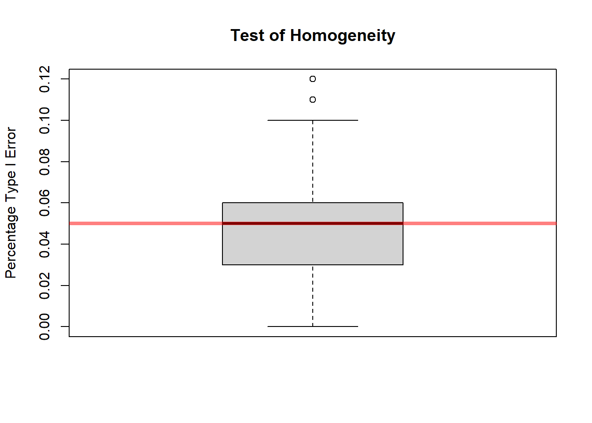
11.9.11 Summary
The chi-square test of homogeneity is used to compare the categorical distributions of a response variable across several groups or populations.
It asks whether the groups all share the same population distribution, or whether at least one group differs.
The test:
- organizes the data into a contingency table
- computes expected counts under the assumption of equal distributions
- compares observed counts to expected counts using \[ \chi^2=\sum \frac{(O-E)^2}{E} \]
- uses degrees of freedom \[ (r-1)(c-1) \]
A significant result provides evidence that the distributions are not all the same.
But the test does not identify the specific source of the difference, so the table and the group proportions must be examined carefully after the test is performed.
11.10 Measuring Strength of Association
11.10.1 Statistical Significance versus Strength of Association
When analyzing categorical data, it is important to separate two ideas that are related but not identical:
- statistical significance
- strength of association
A small p-value tells us that the observed table is unlikely under the null hypothesis.
It does not tell us how important, large, or meaningful the relationship is.
This distinction is especially important for categorical data because chi-square tests are often applied to large tables or large data sets, where even modest departures from the null hypothesis can produce highly significant results.
A chi-square test may tell us that two variables are associated, but it does not tell us how strong that association is.
For example, with a very large sample, even a small difference in proportions can lead to a statistically significant result. But that difference may not be practically meaningful.
Suppose that in a very large admissions study the admission rate is 50.5% for one group and 49.5% for another group. With enough observations, this difference may produce a very small p-value. Statistically, we might conclude that the two variables are associated. But from a practical point of view, a difference of only 1 percentage point may not be very important.
So the p-value answers one question:
Is there evidence that an association exists?
But it does not answer another important question:
How large is the association?
That second question requires an effect-size measure.
11.10.1.1 Why the Chi-Square Test Alone Is Not Enough
The chi-square test is an overall test of departure from a null model.
It tells us whether the observed counts differ from the expected counts enough to suggest that the null hypothesis is false.
But it does not directly describe:
- the direction of the relationship
- the size of the differences
- the practical meaning of the association
- which cells of the table contribute most to the result
This limitation is important because in applied work, we usually care not only about whether a difference exists, but also about whether that difference matters.
For example:
- In a medical study, a tiny difference in recovery proportions may not justify switching treatments.
- In an educational study, a slight difference in program preference may not affect policy decisions.
- In an admissions study, a statistically significant association may still correspond to a very small difference in actual admission rates.
So the chi-square test should be viewed as a starting point, not the complete analysis.
11.10.1.2 Why Large Samples Can Be Misleading
One reason this issue arises is that statistical significance depends heavily on sample size.
As the sample size becomes very large, the standard errors become small, and even slight discrepancies between the observed table and the null model can produce a large chi-square statistic.
That means:
- with a large sample, weak associations may still be statistically significant
- with a small sample, moderately important associations may fail to reach significance
So statistical significance depends on both:
- the size of the association
- the amount of information in the sample
This is why it is dangerous to interpret a small p-value as though it automatically meant a strong relationship.
A p-value tells us about evidence against the null hypothesis.
It does not tell us how much the variables are related in a practical sense.
11.10.1.3 Why Effect Size Matters
An effect-size measure helps answer the practical question:
If the variables are associated, how much are they associated?
This is often the real scientific or policy question.
In categorical data, effect size may be described in different ways depending on the problem.
For example, we might report:
- the difference between two proportions
- a relative risk
- an odds ratio
- the actual row or column percentages
These measures provide information about the magnitude of the association, not just its existence.
That is why, after a significant chi-square test, we should often report a measure of effect size.
The choice of effect-size measure depends on the structure of the data and the kind of interpretation we want.
11.10.1.4 A Practical Way to Think About It
A useful way to think about the analysis is as a two-step process.
Step 1: Use a hypothesis test to assess whether there is evidence of an association.
Step 2: Use summaries and effect-size measures to assess whether the association is important and to understand its form.
So a good report of categorical data should usually include more than:
- the chi-square statistic
- the degrees of freedom
- the p-value
It should also include information such as:
- the observed proportions
- how much those proportions differ
- an interpretable measure of association
- the practical meaning of the result in context
11.10.1.5 Example of the Distinction
Suppose two groups have the following admission rates:
- Group 1: 62%
- Group 2: 58%
The difference is 4 percentage points.
With a very large sample, this difference may be statistically significant.
With a small sample, it may not be.
But the practical difference remains 4 percentage points in either case.
This illustrates the key idea:
Statistical significance can change with sample size, but effect size describes the actual magnitude of the relationship.
That is why both kinds of information are needed.
11.10.1.6 Summary
A small p-value does not measure practical importance.
A chi-square test can tell us whether there is evidence of an association between two categorical variables, but it does not tell us how strong that association is.
Because of this, statistical significance should not be confused with practical significance.
Especially in large samples, small differences can produce strong statistical evidence even when the actual relationship is weak.
Therefore, after testing, we should often report:
- a measure of effect size
- the actual proportions or percentages
- an interpretation of the practical importance of the relationship
In categorical-data analysis, good interpretation requires both:
- evidence that an association exists
- a clear description of how strong that association is
11.11 Categorical Data and Study Design
11.11.1 Surveys and Proportions
Sampling design matters.
If a survey is used to estimate a population proportion, the sample must be representative of the target population.
For example, if we estimate the proportion of voters supporting a candidate, the result depends heavily on how the sample was selected.
Bias in sampling can lead to biased estimates of proportions.
Important issues include:
- nonresponse
- undercoverage
- convenience sampling
- wording of survey questions
- weighting and design effects
A statistically correct formula cannot fix a poorly designed survey.
11.11.2 Experiments and Proportions
Randomization supports causal interpretation.
For example, suppose participants are randomly assigned to treatment and placebo groups, and the response is recovery or no recovery.
Because treatment assignment is randomized, differences in recovery proportions can more plausibly be attributed to the treatment.
In this setting, inference for proportions can support causal conclusions, assuming the experiment was properly conducted.
11.11.3 Observational Studies and Confounding
Association is not automatically causation.
In observational studies, groups are not formed by random assignment. As a result, differences in proportions may be due to confounding variables.
For example, if people who choose one treatment differ systematically from people who choose another treatment, then differences in outcomes may not be caused by the treatment itself.
This is why categorical data analysis must always be interpreted in light of study design.
11.12 What to Check Before Applying Categorical Inference
11.12.1 Study Design
Check how data were collected.
Ask:
- Was the sample random?
- Were groups randomly assigned?
- Is the study observational or experimental?
- Are there possible confounding variables?
- Are the observations independent?
The study design determines what conclusions are justified.
11.12.2 Type of Response
Identify the response structure:
- binary response
- multinomial response
- contingency table
Different structures require different methods.
A one-proportion problem is not the same as a two-proportion problem. A goodness-of-fit test is not the same as a test of independence. A stratified analysis is not the same as a pooled analysis.
Correct method selection begins with correct identification of the data structure.
11.12.3 Sample Size and Expected Counts
Check assumptions.
For large-sample categorical methods, expected counts should generally not be too small.
Small expected counts can make normal and chi-square approximations unreliable.
When counts are small, exact methods may be more appropriate.
11.12.4 Interpretation
Statistical significance and substantive interpretation both matter.
A small p-value indicates evidence against a null hypothesis, but it does not measure practical importance.
Always ask:
- How large is the difference?
- What does it mean in context?
- Is the association practically important?
- Could confounding explain the result?
- Does the study design support causal interpretation?
Good statistical reporting requires more than a test statistic and p-value.
11.13 Reporting Results for Categorical Data
11.13.1 What to Report
Typically report:
- estimate
- confidence interval
- test result
- effect size
- interpretation
For example, when comparing two proportions, report:
- \(\hat p_1\)
- \(\hat p_2\)
- \(\hat p_1-\hat p_2\)
- a confidence interval for \(p_1-p_2\)
- the p-value for the relevant hypothesis test
- a contextual interpretation
For contingency tables, report:
- the table of counts
- row or column percentages
- the chi-square test result
- an effect-size measure if appropriate
- an interpretation of association
11.13.2 Avoiding Common Mistakes
Common mistakes include:
- reporting only p-values
- ignoring effect size
- confusing association and causation
- using large-sample methods with very small counts
- interpreting column percentages as row percentages
- pooling across strata when stratification matters
A strong categorical analysis should connect the statistical result back to the question that motivated the study.
11.14 Summary
Major tools introduced:
- one proportion inference
- two proportion inference
- chi-square methods
- odds ratios
- exact methods
- stratified methods
Major idea:
Categorical inference extends the same logic used throughout previous chapters:
- estimate the relevant parameter
- quantify uncertainty
- test hypotheses
- interpret in context
The main difference is that categorical data are summarized using counts and proportions rather than means and variances.
The chapter also emphasizes that study design matters. The same table of counts can have different interpretations depending on whether the data came from a survey, experiment, observational study, or stratified design.
11.15 Key Formulas
Sample proportion:
\[ \hat p=\frac xn \]
Variance:
\[ \mathbb V(\hat p)=\frac{p(1-p)}n \]
One proportion z statistic:
\[ z= \frac{\hat p-p_0} {\sqrt{p_0(1-p_0)/n}} \]
Difference in proportions:
\[ \hat p_1-\hat p_2 \]
Standard error for a confidence interval for \(p_1-p_2\):
\[ \sqrt{ \frac{\hat p_1(1-\hat p_1)}{n_1} + \frac{\hat p_2(1-\hat p_2)}{n_2} } \]
Pooled proportion for testing \(p_1=p_2\):
\[ \hat p= \frac{x_1+x_2}{n_1+n_2} \]
Chi-square statistic:
\[ \chi^2= \sum \frac{(O-E)^2}{E} \]
Expected count in a contingency table:
\[ E_{ij}= \frac{(\text{row total})(\text{column total})}{\text{grand total}} \]
11.16 Scatterplots and First Impressions
A regression analysis should begin with a graph.
Before fitting a line, computing a correlation, or carrying out a hypothesis test, we should look at the data directly. This is especially important in regression because the numerical summaries can be misleading when the relationship is curved, when there are outliers, or when the data contain separate groups.
A scatterplot is the natural starting point because it shows the pairwise relationship between the explanatory variable and the response variable in its rawest form.
11.16.1 Scatterplot
A scatterplot displays each observational unit as a point with coordinates \((x,y)\).
In the study-time example, each point represents one student:
- the horizontal coordinate gives the number of hours studied
- the vertical coordinate gives the exam score
So the scatterplot shows the full collection of paired observations at once.
This is important because regression is about a relationship between two variables, not about either variable in isolation. A histogram of study time and a histogram of exam scores would each describe one variable, but neither would reveal how the two variables move together. The scatterplot does.
A scatterplot is also useful because it lets us see whether a simple linear regression model is even plausible before we begin formal modeling.
11.16.2 What to Look For
A scatterplot helps answer several basic questions.
- Is the relationship roughly increasing or decreasing?
- Does a straight line seem reasonable?
- Are there outliers?
- Is the spread of the points roughly constant?
- Are there separate groups that should not be combined?
These questions are not minor details. They determine whether simple linear regression is an appropriate model.
For example, if the points show a roughly increasing straight-line pattern, then a positive linear model may be reasonable. If the relationship is clearly curved, then a straight line may be too simple. If the points spread out more and more as \(x\) increases, then the constant-variance assumption may be questionable. If there are distinct clusters, then one fitted line for all observations may hide important structure.
So the scatterplot is already doing statistical work. It is not just an illustration.
11.16.3 Why the Graph Comes First
A numerical summary alone can hide important structure.
Two data sets can have similar correlations and similar fitted lines but very different scatterplots. One may show a clean linear trend, while another may show curvature, clustering, or a single influential observation.
This is one of the most important practical lessons in regression:
A fitted line should never be interpreted without first looking at the scatterplot.
The graph is the first diagnostic tool because it tells us whether the basic form of the model is even sensible.
# Scatter Plots Patterns
# Simulation Parameters
n <- 100
s2 <- 20
# Simulates the Explanatory Variable
x <- runif(n = n, min = 0, max = 10)
# Linear relationship
aLin <- -10
bLin <- 5
fLin <- function(x){aLin + bLin * x}
yLin <- fLin(x) + rnorm(n = n, sd = sqrt(s2))
# Quadratic Relationship
aQua <- 1
bQua <- -20
cQua <- 2
fQua <- function(x){aQua + bQua * x + cQua * x^2}
yQua <- fQua(x) + rnorm(n = n, sd = sqrt(s2))
# Square Root Relationship
aSqr <- -30
bSqr <- 20
fSqr <- function(x){aSqr + bSqr * sqrt(x)}
ySqr <- fSqr(x) + rnorm(n = n, sd = sqrt(s2))
# Logarithm Relationship
aLog <- -5
bLog <- 10
fLog <- function(x){aLog + bLog * log(x)}
yLog <- fLog(x) + rnorm(n = n, sd = sqrt(s2))
# Plots the Relationships
par(mfrow = c(2, 2))
ymax <- max(yLin, yQua, yLog, ySqr)
ymin <- min(yLin, yQua, yLog, ySqr)
# linear Relationship
plot(x = x,
y = yLin,
ylim = c(ymin, ymax),
ylab = "",
main = "Linear Relationship")
curve(fLin,
add = TRUE,
col = rgb(1, 0, 0, 0.5),
lwd = 3)
# Quadratic Relationship
plot(x = x,
y = yQua,
ylim = c(ymin, ymax),
ylab = "",
main = "Quadratic Relationship")
curve(fQua,
add = TRUE,
col = rgb(1, 0, 0, 0.5),
lwd = 3)
# Square Root Relationship
plot(x = x,
y = ySqr,
ylim = c(ymin, ymax),
ylab = "",
main = "Square Root Relationship")
curve(fSqr,
add = TRUE,
col = rgb(1, 0, 0, 0.5),
lwd = 3)
# Logarithmic Relationship
plot(x = x,
y = yLog,
ylim = c(ymin, ymax),
ylab = "",
main = "Logarithmic Relationship")
curve(fLog,
add = TRUE,
col = rgb(1, 0, 0, 0.5),
lwd = 3)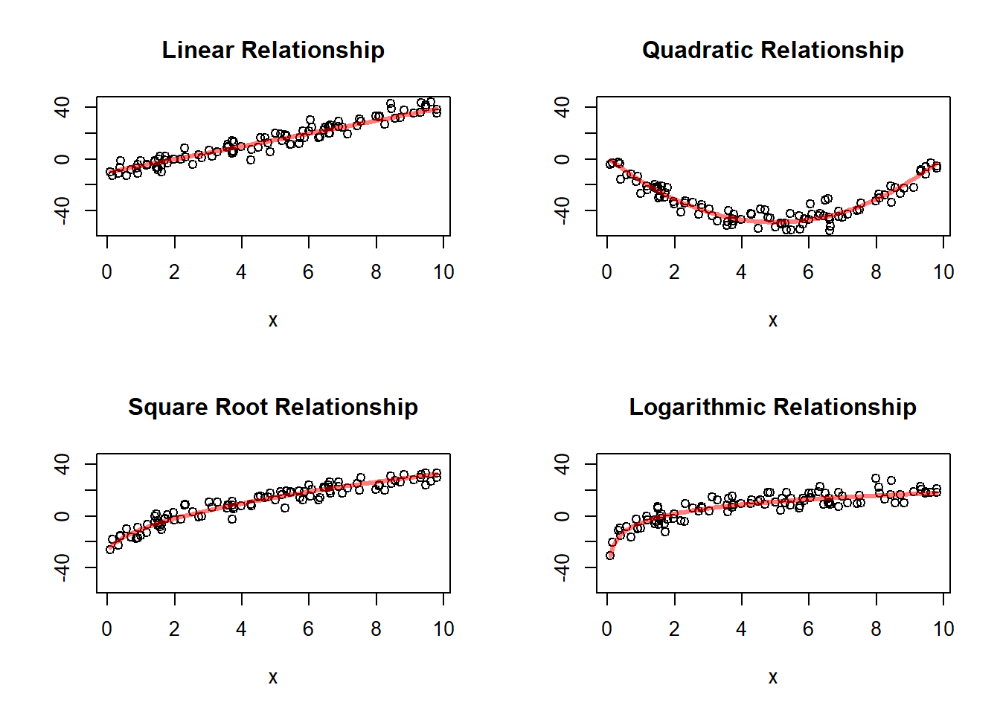
This simulation is useful because it shows several relationships that may all look increasing, but are not equally well described by a straight line.
The first panel shows a truly linear relationship. The remaining panels show nonlinear relationships. This illustrates why a scatterplot must come before fitting a simple linear model. A line may look reasonable in some settings and inadequate in others.
So the main lesson is:
Not every relationship between two quantitative variables is linear, even when the variables are clearly associated.
11.17 The Simple Linear Regression Model
11.17.1 The Population Regression Line
Simple linear regression models the mean response as a linear function of the explanatory variable:
\[ E(y \mid x) = \beta_0 + \beta_1 x \]
where:
\(\beta_0\) is the intercept
\(\beta_1\) is the slope
This equation is called the population regression line.
It is important to interpret this correctly. The equation does not say that every observed response lies exactly on a line. Instead, it says that the mean response at a given value of \(x\) lies on a line.
So the regression model is a model for the conditional mean of the response, not a perfect deterministic rule for individual observations.
This is one of the central conceptual ideas of regression.
11.17.2 Interpretation of the Intercept
The intercept \(\beta_0\) is the mean value of \(y\) when \(x=0\).
Its practical meaning depends on the setting.
In some applications, \(x=0\) is meaningful and lies within the range of the data. In that case, the intercept has a direct interpretation.
For example, if \(x\) is hours studied, then \(\beta_0\) is the mean exam score for students who studied zero hours.
But in other applications, \(x=0\) may not be realistic or may lie far outside the observed range. Then the intercept still exists mathematically, but its practical meaning may be weak.
Students should therefore learn an important habit:
Always ask whether \(x=0\) makes sense in the context of the problem before interpreting the intercept too strongly.
11.17.3 Interpretation of the Slope
The slope \(\beta_1\) describes how the mean response changes when \(x\) increases by one unit.
In the study-time example, \(\beta_1\) is the change in mean exam score associated with one additional hour of study.
If \(\beta_1 > 0\), the relationship is increasing.
If \(\beta_1 < 0\), the relationship is decreasing.
If \(\beta_1 = 0\), there is no linear relationship in the mean response.
The slope is usually the most important parameter in simple linear regression because it describes the direction and rate of change of the mean response.
It is often the main inferential target in the chapter because it tells us whether the explanatory variable is useful for describing or predicting the response.
11.17.4 Adding Random Error
Individual observations will not lie exactly on the line. A more complete model is
\[ y_i = \beta_0 + \beta_1 x_i + e_i \]
where \(e_i\) represents the deviation of the observed response from the mean response at \(x_i\).
This form says that each observation is made of two parts:
a systematic part, \(\beta_0 + \beta_1 x_i\)
a random part, \(e_i\)
The systematic part describes the average pattern across values of \(x\).
The random part represents the variation that remains around that average pattern.
This random deviation is essential. It acknowledges that even when the explanatory variable is known, the response is still not perfectly predictable.
11.17.5 Assumptions
For the usual simple linear regression model, we assume:
the mean response is linear in \(x\)
the errors have mean 0
the errors have common variance \(\sigma^2\)
the errors are independent
for inference, the errors are often assumed to be approximately normal
These assumptions should be understood intuitively.
The linearity assumption says that a straight line is a reasonable description of the mean response.
The mean-zero error assumption says that the regression line is correctly centered: observations are as likely to fall above the line as below it.
The constant-variance assumption says that the spread around the line is about the same across the range of \(x\).
The independence assumption says that the errors for different observations do not systematically move together.
The normality assumption is mainly used for formal inference, such as confidence intervals and hypothesis tests for the slope and intercept.
These assumptions are not guaranteed by fitting a line. They are assumptions that must be checked and judged from the data and the study context.
11.18 Why a Line?
A straight line is the simplest way to describe a changing average response.
It will not be appropriate in every setting, but it is often a useful first approximation.
A linear model is especially attractive because:
it is easy to interpret
it summarizes the direction of the relationship
it provides a clear measure of rate of change through the slope
it supports estimation, testing, and prediction
The simplicity of the line is one of its strengths. Even when the true relationship is not perfectly linear, a line may still provide a useful summary over the observed range.
Students should understand that fitting a line does not mean the true relationship is exactly linear. It means that a line is being used as a model that may capture the main pattern in the data well enough to be useful.
So the question is not whether the world is exactly linear. The question is whether a linear model is an adequate and interpretable approximation for the data at hand.
11.19 Estimating the Regression Line
The population parameters \(\beta_0\) and \(\beta_1\) are unknown, so they must be estimated from the sample.
11.19.1 The Estimated Regression Line
The sample regression line is
\[ \hat{y} = b_0 + b_1 x \]
where:
\(b_0\) estimates \(\beta_0\)
\(b_1\) estimates \(\beta_1\)
This line is often called the fitted regression line.
It is the line produced from the sample data and is used to describe the estimated mean response at different values of \(x\).
11.19.2 Least Squares Idea
The most common method for estimating the line is least squares.
For each observation, the residual is
\[ e_i = y_i - \hat{y}_i \]
where \(\hat{y}_i\) is the predicted value from the line.
Least squares chooses the line that makes the sum of squared residuals as small as possible:
\[ \sum (y_i - \hat{y}_i)^2. \]
So among all possible lines, the least squares line is the one that fits the observed data most closely in the sense of minimizing total squared vertical error.
This provides a very clear optimization principle for fitting the line.
11.19.3 Why Squared Residuals?
Squaring does two things:
it prevents positive and negative residuals from canceling
it penalizes large deviations more heavily than small deviations
The first point is necessary because otherwise a point above the line and a point below the line could offset each other, making the total error appear smaller than it really is.
The second point is useful because large deviations matter more for fit than small ones. Squaring gives those large deviations greater weight.
This is why least squares is both mathematically convenient and practically meaningful.
11.19.4 Interpreting the Fitted Line
The fitted line summarizes the average trend in the data.
It should not be interpreted as saying every observation follows the line exactly. Rather, it gives the predicted mean response at each value of \(x\).
So if the fitted line predicts an exam score of 78 for students who study 4 hours, that should be interpreted as the estimated mean score for students at that study-time level, not as the exact score every such student will receive.
This distinction between a mean response and an individual response is fundamental and will become especially important later when discussing prediction intervals.
11.20 Residuals
Residuals are central to understanding regression.
11.20.1 Definition
The residual for the \(i\)th observation is
\[ e_i = y_i - \hat{y}_i \]
It measures how far the observed point is above or below the fitted line.
The residual is therefore the vertical discrepancy between what we observed and what the fitted model predicted for that value of \(x\).
11.20.2 Interpretation
A positive residual means the observed value is above the line.
A negative residual means the observed value is below the line.
A residual near 0 means the fitted line predicts that observation well.
Residuals provide case-by-case information about model fit. They show where the line fits well and where it fits poorly.
11.20.3 Why Residuals Matter
Residuals help assess:
whether the linear model is appropriate
whether variability is roughly constant
whether unusual observations are present
Residuals are not just leftover noise. They are one of the main tools for checking the adequacy of the model.
In a good regression fit, the residuals should behave like unsystematic random variation around 0. If the residuals display structure, such as a curve or a fan shape, then the fitted line may be missing something important.
```{r # Residual Plots Patterns